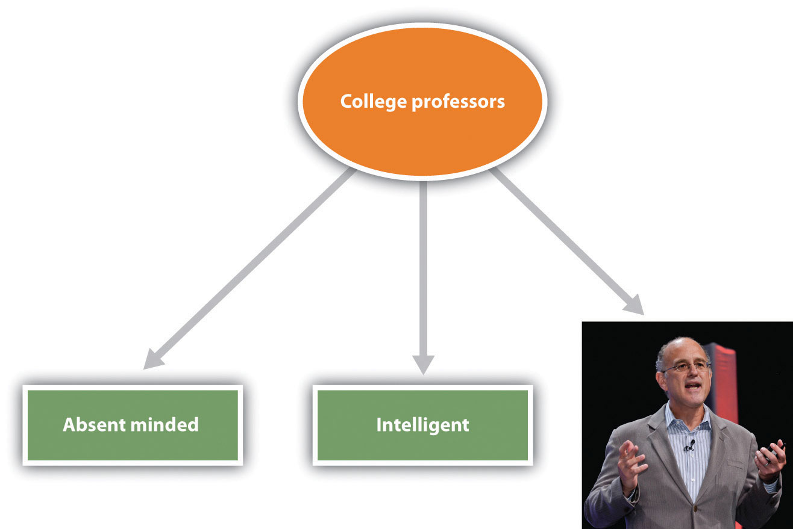
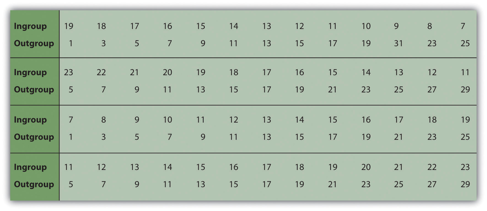
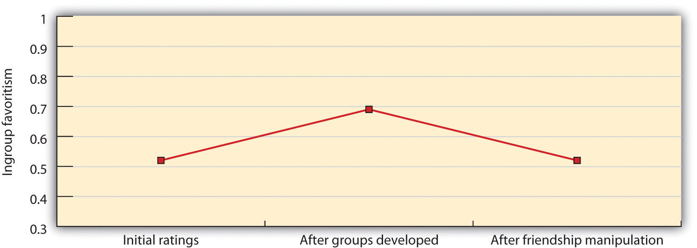
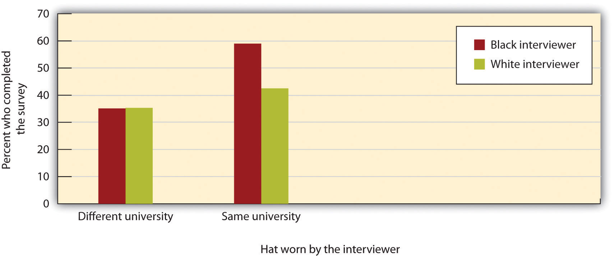

Hate crimes are fortunately very rare. They are often followed by vigils like this one in which people come together to express their support for those who have been attacked.
Image courtesy of alka3en, http://commons.wikimedia.org/wiki/File:Virginia_Tech_massacre_candlelight_vigil_Burruss.jpg.
On February 27, 2005, James Maestas, a Latino gay man from Santa Fe, New Mexico, and his companion, Joshua Stockham, were leaving a restaurant when they were approached by five men who started to become violent toward them. One of the assailants, who was 19 years old at the time, stood over Maestas and repeatedly punched him in the face and head.
Maestas was taken to St. Vincent Regional Medical Center in Santa Fe where he was treated for a broken nose and a concussion. Because he was kicked so hard in the abdomen, he also required the help of a respirator to breathe.
In the months that followed the attack, people gathered for a vigil to show their support for Maestas and even donated almost $50,000 to help pay his medical bills.
Maestas made a full recovery and said he had plans to begin classes at Santa Fe Community College. He hoped he could sit down one day and have a friendly talk with his attackers.
The assailants were charged with aggravated battery and conspiracy and tried under New Mexico’s hate crimes law, which added time to their sentences.
Source: LGBT Hate Crimes Project. (2010). James Maestas. Retrieved from http://www.lgbthatecrimes.org/doku.php/james_maestas.
Contemporary increases in globalization and immigration are leading to more culturally diverse populations in the United States and in many other countries. People from minority groups now account for over one third of the U.S. population, as well as most of the growth in its labor force. Older people are working longer, women are becoming more equally represented in a wide variety of jobs, and the ethnic mix of most occupations is also increasing (U.S. Census Bureau, 2011).U.S. Census Bureau. Retrieved from http://www.census.gov
These changes will create many benefits for society and for the individuals within it. Gender, cultural, and ethnic diversity can improve creativity and group performance, facilitate new ways of looking at problems, and allow multiple viewpoints on decisions (Mannix & Neale, 2005; van Knippenberg & Schippers, 2007).Mannix, E., & Neale, M. A. (2005). What differences make a difference? The promise and reality of diverse teams in organizations. Psychological Science in the Public Interest, 6(2), 31–55; van Knippenberg, D., & Schippers, M. C. (2007). Work group diversity. Annual Review of Psychology, 58(1), 515–541. On the other hand, as we have seen in many places in this book, perceived similarity is an extremely important determinant of liking. Members of culturally diverse groups may be less attracted to each other than are members of more homogeneous groups, may have more difficulty communicating with each other, and in some cases may actively dislike and even engage in aggressive behavior toward each other.
The principles of social psychology, including the ABCs—affect, behavior, and cognition—apply to the study of stereotyping, prejudice, and discrimination, and social psychologists have expended substantial research efforts studying these concepts (Figure 12.1). The cognitive component in our perceptions of group members is the stereotypeThe positive or negative beliefs that we hold about the characteristics of social groups.—the positive or negative beliefs that we hold about the characteristics of social groups. We may decide that “Italians are romantic,” that “old people are boring,” or that “college professors are nerds.” And we may use those beliefs to guide our actions toward people from those groups. In addition to our stereotypes, we may also develop prejudiceAn unjustifiable negative attitude toward an outgroup or toward the members of that outgroup.—an unjustifiable negative attitude toward an outgroup or toward the members of that outgroup. Prejudice can take the form of disliking, anger, fear, disgust, discomfort, and even hatred—the kind of affective states that can lead to behavior such as the gay bashing you just read about. Our stereotypes and our prejudices are problematic because they may create discriminationUnjustified negative behaviors toward members of outgroups based on their group membership.—unjustified negative behaviors toward members of outgroups based on their group membership.
Although violence against members of outgroups is fortunately rare, stereotypes, prejudice, and discrimination nevertheless influence people’s lives in a variety of ways. Stereotypes influence our academic performance (Shapiro & Neuberg, 2007), Shapiro, J. R., & Neuberg, S. L. (2007). From stereotype threat to stereotype threats: Implications of a multi-threat framework for causes, moderators, mediators, consequences, and interventions. Personality and Social Psychology Review, 11(2), 107–130. doi: 10.1177/1088868306294790 the careers that we chose to follow (Zhang, Schmader, Forbes, 2009),Zhang, S., Schmader, T., & Forbes, C. (2009). The effects of gender stereotypes on women’s career choice: Opening the glass door. In M. Barreto, M. K. Ryan, & M. T. Schmitt (Eds.), The glass ceiling in the 21st century: Understanding barriers to gender equality (pp. 125–150). Washington, DC: American Psychological Association. our experiences at work (Fiske & Lee, 2008),Fiske, S. T., & Lee, T. L. (2008). Stereotypes and prejudice create workplace discrimination. In A. P. Brief (Ed.), Diversity at work (pp. 13–52). Cambridge, UK: Cambridge University Press. and the amount that we are paid for the work that we do (Jackson, 2011; Wood & Eagly, 2010).Jackson, L. M. (2011). The psychology of prejudice: From attitudes to social action. Washington, DC: American Psychological Association; Wood, W., & Eagly, A. H. (2010). Gender. In S. T. Fiske, D. T. Gilbert, & G. Lindzey (Eds.), Handbook of social psychology (5th ed., Vol. 1, pp. 629–667). Hoboken, NJ: John Wiley & Sons.
Figure 12.1

Relationships among social groups are influenced by the ABCs of social psychology.
Stereotypes and prejudice have a pervasive and often pernicious influence on our responses to others, and also in some cases on our own behaviors. To take one example, social psychological research has found that our stereotypes may in some cases lead to stereotype threatPerformance decrements that are caused by the knowledge of cultural stereotypes.—performance decrements that are caused by the knowledge of cultural stereotypes. Spencer, Steele, and Quinn (1999)Spencer, S. J., Steele, C. M., & Quinn, D. M. (1999). Stereotype threat and women’s math performance. Journal of Experimental Social Psychology, 35, 4–28. found that when women were reminded of the (untrue) stereotype that “women are poor at math” they performed more poorly on math tests than when they were not reminded of the stereotype, and other research has found stereotype threat in many other domains as well. We’ll consider the role of stereotype threat in more detail later in this chapter.
In one particularly disturbing line of research about the influence of prejudice on behaviors, Joshua Correll and his colleagues had White participants participate in an experiment in which they viewed photographs of White and Black people on a computer screen. Across the experiment, the photographs showed the people holding either a gun or something harmless such as a cell phone. The participants were asked to decide as quickly as possible to press a button to “shoot” if the target held a weapon but to “not shoot” if the person did not hold a weapon. Overall, the White participants tended to shoot more often when the person holding the object was Black than when the person holding the object was White, and this occurred even when there was no weapon present (Correll, Park, Judd, & Wittenbrink, 2007; Correll et al., 2007).Correll, J., Park, B., Judd, C. M., & Wittenbrink, B. (2007). The influence of stereotypes on decisions to shoot. European Journal of Social Psychology, 37(6), 1102–1117. doi: 10.1002/ejsp.450; Correll, J., Park, B., Judd, C. M., Wittenbrink, B., Sadler, M. S., & Keesee, T. (2007). Across the thin blue line: Police officers and racial bias in the decision to shoot. Journal of Personality and Social Psychology, 92(6), 1006–1023. doi: 10.1037/0022–3514.92.6.1006
Discrimination is a major societal problem because it is so pervasive, takes so many forms, and has such negative effects on so many people. Even people who are paid to be unbiased may discriminate. Price and Wolfers (2007)Price, J., & Wolfers, J. (2007). Racial discrimination among NBA referees. NBER Working Paper #13206. Cambridge, MA: National Bureau of Economic Research. found that White players in National Basketball Association games received fewer fouls when more of the referees present in the game were White, and Black players received fewer fouls when more of the referees present in the game where Black. The implication is—whether they know it or not—the referees were discriminating on the basis of race.
I’m sure that you have had some experiences where you found yourself responding to another person on the basis of a stereotype or a prejudice, and perhaps the fact that you did surprised you. Perhaps you then tried to get past these beliefs and to react to the person more on the basis of his or her individual characteristics. We like some people and we dislike others—this is natural—but we should not let a person’s skin color, gender, age, religion, or ethnic background make these determinations for us. And yet, despite our best intentions, we may end up making friends only with people who are similar to us and perhaps even avoiding people whom we see as different.
In this chapter, we will study the processes by which we develop, maintain, and make use of our stereotypes and our prejudices. We will consider the negative outcomes of those beliefs on the targets of our perceptions, and we will consider ways that we might be able to change those beliefs, or at least help us stop acting upon them. Let’s begin by considering the cognitive side of our group beliefs—focusing primarily on stereotypes—before turning to the important role of feelings in prejudice.
Thinking about others in terms of their group memberships is known as social categorizationThe natural cognitive process of placing individuals into social groups according to their social categories (e.g., men versus women, old people versus young people).—the natural cognitive process by which we place individuals into social groups. Social categorization occurs when we think of someone as a man (versus a woman), an old person (versus a young person), a Black person (versus an Asian or White person), and so on (Allport, 1954/1979).Allport, G. W. (1954/1979). The nature of prejudice. New York, NY: Doubleday. Just as we categorize objects into different types, so we categorize people according to their social group memberships. Once we do so, we begin to respond to those people more as members of a social group than as individuals.
Imagine for a moment that two college students, John and Sarah, are talking at a table in the student union at your college or university. At this point, we would probably not consider them to be acting as group members, but rather as two individuals. John is expressing his opinions, and Sarah is expressing hers. Imagine, however, that as the conversation continues, Sarah brings up an assignment that she is completing for her women’s studies class. It turns out that John does not think there should be a women’s studies program at the college, and he tells Sarah so. He argues that if there is a women’s studies program, then there should be a men’s studies program too. Furthermore, he argues that women are getting too many breaks in job hiring and that qualified men are the targets of discrimination. Sarah feels quite the contrary—arguing that women have been the targets of sexism for many, many years and even now do not have the same access to high-paying jobs that men do.
You can see that an interaction that began at individual level, as two individuals conversing, has now turned to the group level, in which John has begun to consider himself as a man, and Sarah has begun to consider herself as a woman. In short, Sarah is now arguing her points not so much for herself as she is as a representative of one of her ingroups—namely, women—and John is acting as a representative of one of his ingroups—namely, men. Sarah feels that her positions are correct, and she believes they are true not only for her but for women in general. And the same is true of John. You can see that these social categorizations may create some potential for misperception, and perhaps even hostility. And John and Sarah may even change their opinions about each other, forgetting that they really like each other as individuals, because they are now responding more as group members with opposing views.
Imagine now that while John and Sarah are still talking, some students from another college, each wearing the hats and jackets of that school, show up in the student union. The presence of these outsiders might change the direction of social categorization entirely, leading both John and Sarah to think of themselves as students at their own college. And this social categorization might lead them to become more aware of the positive characteristics of their college (the excellent basketball team, lovely campus, and intelligent students) in comparison with the characteristics of the other school. Now, rather than perceiving themselves as members of two different groups (men versus women), John and Sarah might suddenly perceive themselves as members of the same social category (students at their college).
Perhaps this example will help you see the flexibility of social categorization. We sometimes think of our relationships with others at the individual level and sometimes at the group level. And which groups we use in social categorization can change over time and in different situations. I think you would agree that you are more likely to categorize yourself as a member of your college or university when your basketball or football team has just won a really important game, or at your commencement day ceremony, than you would on a normal evening out with your family. In these cases, your membership as a university student is simply more salient and important than it is every day, and you are more likely to categorize yourself accordingly.
Social categorization occurs spontaneously, without much thought on our part (Crisp & Hewstone, 2007).Crisp, R. J., & Hewstone, M. (Eds.). (2007). Multiple social categorization. San Diego, CA: Elsevier Academic Press. Shelley Taylor and her colleagues (Taylor, Fiske, Etcoff, & Ruderman, 1978)Taylor, S. E., Fiske, S. T., Etcoff, N. L., & Ruderman, A. J. (1978). Categorical and contextual bases of person memory and stereotyping. Journal of Personality and Social Psychology, 36(7), 778–793. showed their research participants a slide and tape presentation of three male and three female college students who had supposedly participated in a discussion group. During the presentation, each member of the discussion group made a suggestion about how to advertise a college play. The statements were controlled so that across all the research participants, the statements made by the men and the women were of equal length and quality. Furthermore, one half of the participants were told that when the presentation was over, they would be asked to remember which person had made which suggestion, whereas the other half of the participants were told merely to observe the interaction without attending to anything in particular.
After they had viewed all the statements made by the individuals in the discussion group, the research participants were given a memory test (this was entirely unexpected for the participants who had not been given memory instructions). The participants were shown the list of all the statements that had been made, along with the pictures of each of the discussion group members, and were asked to indicate who had made each of the statements. The research participants were not very good at this task, and yet when they made mistakes, these errors were very systematic.
As you can see in Table 12.1 "Name Confusions", the mistakes were such that the statements that had actually been made by a man were more frequently wrongly attributed to another man in the group than to another woman, and the statements actually made by a woman were more frequently attributed to other women in the group than to a man. The participants evidently categorized the speakers by their gender, leading them to make more within-gender than across-gender confusions.
Interestingly, and suggesting that categorization is occurring all the time, the instructions that the participants had been given made absolutely no difference. There was just as much categorization for those who were not given any instructions as for those who were told to remember who said what. Other research using this technique has found that we spontaneously categorize each other on the basis of many other group memberships, including race, academic status (student versus teacher), social roles, and other social categories (Fiske, Haslam, & Fiske, 1991; Stangor, Lynch, Duan, & Glass, 1992).Fiske, A. P., Haslam, N., & Fiske, S. T. (1991). Confusing one person with another: What errors reveal about the elementary forms of social relations. Journal of Personality and Social Psychology, 60(5), 656–674; Stangor, C., Lynch, L., Duan, C., & Glass, B. (1992). Categorization of individuals on the basis of multiple social features. Journal of Personality and Social Psychology, 62(2), 207–218.
Table 12.1 Name Confusions
| Instructions | Within race errors | Between race errors |
|---|---|---|
| Memory | 5.78 | 4.29 |
| No memory | 6.57 | 4.36 |
| Taylor, Fiske, Etcoff, and Ruderman (1978)Taylor, S. E., Fiske, S. T., Etcoff, N. L., & Ruderman, A. J. (1978). Categorical and contextual bases of person memory and stereotyping. Journal of Personality and Social Psychology, 36(7), 778–793. demonstrated that people categorized others spontaneously. Even without any instructions to categorize, people nevertheless confused others by their sex. | ||
The conclusion is simple, if perhaps obvious: Social categorization is occurring all around us all the time. Indeed, social categorization occurs so quickly that people may have difficulty not thinking about others in terms of their group memberships (see Figure 12.3).
The tendency to categorize others is normally quite useful. In some cases, we categorize because doing so provides us with information about the characteristics of people who belong to certain social groups (Lee, Jussim, & McCauley, 1995).Lee, Y. T., Jussim, L. J., & McCauley, C. R. (1995). Stereotype accuracy: Toward appreciating group differences. Washington, DC: American Psychological Association. If you found yourself lost in a city, you might look for a police officer or a taxi driver to help you find your way. In this case, social categorization would probably be useful because a police officer or a taxi driver might be particularly likely to know the layout of the city streets. Of course, using social categories will only be informative to the extent that the stereotypes held by the individual about that category are accurate. If police officers were actually not that knowledgeable about the city layout, then using this categorization would not be informative.
It has been argued that there is a kernel of truth in most stereotypes, and this seems to be the case. There is a correlation between how group members perceive the stereotypes of their own groups and how people from other groups perceive those same stereotypes (Judd & Park, 1993; Swim, 1994).Judd, C. M., & Park, B. (1993). Definition and assessment of accuracy in social stereotypes. Psychological Review, 100(1), 109–128; Swim, J. K. (1994). Perceived versus meta-analytic effect sizes: An assessment of the accuracy of gender stereotypes. Journal of Personality and Social Psychology, 66(1), 21–36. This truth may come in part from the roles that individuals play in society. For instance, the stereotypes (which are held by many people) that women are “nurturing” and that men are “dominant” may occur in part because, on average, men and women find themselves in different social roles within a culture (Eagly & Steffen, 1984).Eagly, A. H., & Steffen, V. J. (1984). Gender stereotypes stem from the distribution of women and men into social roles. Journal of Personality and Social Psychology, 46(4), 735–754. In most cultures, men are more likely to be in higher-status occupations, such as doctors and lawyers, whereas women are more likely to play the role of homemakers and child-care workers. In this sense, the stereotypes are at least partly true for many of the members of the social category, in terms of their actual behaviors. Because men are more likely to be leaders than are women, they may well be, on average, more dominant; and because women are more likely to take care of children, they may, on average, act in a more nurturing way than do men.
On the other hand, we sometimes categorize others not because it seems to provide more information about them but because we may not have the time (or the motivation) to do anything more thorough. Using our stereotypes to size up another person might simply make our life easier (Macrae, Bodenhausen, Milne, & Jetten, 1994).Macrae, C. N., Bodenhausen, G. V., Milne, A. B., & Jetten, J. (1994). Out of mind but back in sight: Stereotypes on the rebound. Journal of Personality and Social Psychology, 67(5), 808–817. According to this approach, thinking about other people in terms of their social category memberships is a functional way of dealing with the world—things are complicated, and we reduce complexity by relying on our stereotypes.
Although thinking about others in terms of their social category memberships has some potential benefits for the person who does the categorizing, categorizing others, rather than treating them as unique individuals with their own unique characteristics, has a wide variety of negative, and often very unfair, outcomes for those who are categorized.
One problem is that social categorization distorts our perceptions such that we tend to exaggerate the differences between people from different social groups while at the same time perceiving members of groups (and particularly outgroups) as more similar to each other than they actually are. This overgeneralization makes it more likely that we will think about and treat all members of a group the same way. Tajfel and Wilkes (1963)Tajfel, H., & Wilkes, A. L. (1963). Classification and quantitative judgment. British Journal of Psychology, 54, 101–114. performed a simple experiment that provided a picture of the potential outcomes of categorization. As you can see in Figure 12.4 "Perceptual Accentuation", the experiment involved having research participants judge the length of six lines. In one of the experimental conditions, participants simply saw six lines, whereas in the other condition, the lines were systematically categorized into two groups—one comprising the three shorter lines and one comprising the three longer lines.
Figure 12.4 Perceptual Accentuation

Lines C and D were seen as the same length in the noncategorized condition, but line C was perceived as longer than line D when the lines were categorized into two groups. From Tajfel (1970).Tajfel, H. (1970). Experiments in intergroup discrimination. Scientific American, 223, 96–102.
Tajfel found that the lines were perceived differently when they were categorized, such that the differences between the groups and the similarities within the groups were emphasized. Specifically, he found that although lines C and D (which are actually the same length) were perceived as equal in length when the lines were not categorized, line D was perceived as being significantly longer than line C in the condition in which the lines were categorized. In this case, categorization into two groups—the “short lines group” and the “long lines group”—produced a perceptual bias such that the two groups of lines were seen as more different than they really were.
Similar effects occur when we categorize other people. We tend to see people who belong to the same social group as more similar than they actually are, and we tend to judge people from different social groups as more different than they actually are. The tendency to see members of social groups as similar to each other is particularly strong for members of outgroups, resulting in outgroup homogeneityThe tendency to view members of outgroups as more similar to each other than we see members of ingroups.—the tendency to view members of outgroups as more similar to each other than we see members of ingroups (Linville, Salovey, & Fischer, 1986; Ostrom & Sedikides, 1992; Meissner & Brigham, 2001).Linville, P. W., Salovey, P., & Fischer, G. W. (1986). Stereotyping and perceived distributions of social characteristics: An application to ingroup-outgroup perception. In J. F. Dovidio & S. L. Gaertner (Eds.), Prejudice, discrimination and racism (pp. 165–208). Orlando, FL: Academic Press; Ostrom, T. M., & Sedikides, C. (1992). Out-group homogeneity effects in natural and minimal groups. Psychological Bulletin, 112(3), 536–552; Meissner, C. A., & Brigham, J. C. (2001). Thirty years of investigating the own-race bias in memory for faces: A meta-analytic review. Psychology, Public Policy, and Law, 7, 3–35. I’m sure you’ve had this experience yourself, when you found yourself thinking or saying, “Oh, them, they’re all the same!”
Patricia Linville and Edward Jones (1980)Linville, P. W., & Jones, E. E. (1980). Polarized appraisals of out-group members. Journal of Personality and Social Psychology, 38, 689–703. gave research participants a list of trait terms and asked them to think about either members of their own group (e.g., Blacks) or members of another group (e.g., Whites) and to place the trait terms into piles that represented different types of people in the group. The results of these studies, as well as other studies like them, were clear: People perceive outgroups as more homogeneous than the ingroup. Just as White people used fewer piles of traits to describe Blacks than Whites, young people used fewer piles of traits to describe elderly people than they did young people, and students used fewer piles for members of other universities than they did for members of their own university.
Outgroup homogeneity occurs in part because we don’t have as much contact with outgroup members as we do with ingroup members, and the quality of interaction with outgroup members is often more superficial. This prevents us from really learning about the outgroup members as individuals, and as a result, we tend to be unaware of the differences among the group members. In addition to learning less about them because we see and interact with them less, we routinely categorize outgroup members, thus making them appear more cognitively similar (Haslam, Oakes, & Turner, 1996).Haslam, S. A., Oakes, P. J., & Turner, J. C. (1996). Social identity, self-categorization, and the perceived homogeneity of ingroups and outgroups: The interaction between social motivation and cognition. In Handbook of motivation and cognition: The interpersonal context (Vol. 3, pp. 182–222). New York, NY: The Guilford Press.
Once we begin to see the members of outgroups as more similar to each other than they actually are, it then becomes very easy to apply our stereotypes to the members of the groups without having to consider whether the characteristic is actually true of the particular individual. If men think that women are all alike, then they may also think that they all have the same characteristics—they’re all “emotional” and “weak.” And women may have similarly simplified beliefs about men (they’re “insensitive,” “unwilling to commit,” etc.). The outcome is that the stereotypes become linked to the group itself in a set of mental representations (Figure 12.5). The stereotypes are “pictures in our heads” of the social groups (Lippman, 1922).Lippman, W. (1922). Public opinion. New York, NY: Harcourt & Brace. These beliefs just seem right and natural, even though they are frequently distorted overgeneralizations (Hirschfeld, 1996; Yzerbyt, Schadron, Leyens, & Rocher, 1994).Hirschfeld, L. (1996). Race in the making: Cognition, culture and the child’s construction of human kinds. Cambridge, MA: MIT Press; Yzerbyt, V., Schadron, G., Leyens, J., & Rocher, S. (1994). Social judgeability: The impact of meta-informational cues on the use of stereotypes. Journal of Personality and Social Psychology, 66, 48–55.
Figure 12.5
Stereotypes are the beliefs associated with social categories. The figure shows links between the social category of college professors and its stereotypes as a type of neural network or schema. The representation also includes one image (or exemplar) of a particular college professor whom the student knows.
Image courtesy of Dan Gilbert.
Our stereotypes and prejudices are learned through many different processes. This multiplicity of causes is unfortunate because it makes stereotypes and prejudices even more likely to form and harder to change. For one, we learn our stereotypes in part through our communications with parents and peers (Aboud & Doyle, 1996)Aboud, F. E., & Doyle, A.-B. (1996). Parental and peer influences on children’s racial attitudes. International Journal of Intercultural Relations, 20, 371–383. and from the behaviors we see portrayed in the media (Brown, 1995).Brown, R. (1995). Prejudice: Its social psychology. Cambridge, MA: Blackwell. Even 5-year-old children have learned cultural norms about the appropriate activities and behaviors for boys and girls and also have developed stereotypes about age, race, and physical attractiveness (Bigler & Liben, 2006).Bigler, R. S., & Liben, L. S. (2006). A developmental intergroup theory of social stereotypes and prejudice. In R. V. Kail (Ed.), Advances in child development and behavior (Vol. 34, pp. 39–89). San Diego, CA: Elsevier. And there is often good agreement about the stereotypes of social categories among the individuals within a given culture. In one study assessing stereotypes, Stephanie Madon and her colleagues (Madon et al., 2001)Madon, S., Guyll, M., Aboufadel, K., Montiel, E., Smith, A., Palumbo, P., et al. (2001). Ethnic and national stereotypes: The Princeton trilogy revisited and revised. Personality and Social Psychology Bulletin, 27(8), 996–1010. doi: 10.1177/0146167201278007 presented U.S. college students with a list of 84 trait terms and asked them to indicate for which groups each trait seemed appropriate (Figure 12.6 "Current Stereotypes Held by College Students"). The participants tended to agree about what traits were true of which groups, and this was true even for groups of which the respondents were likely to never have met a single member (Arabs and Russians). Even today, there is good agreement about the stereotypes of members of many social groups, including men and women and a variety of ethnic groups.
Figure 12.6 Current Stereotypes Held by College Students

From Madon et al. (2001).Madon, S., Guyll, M., Aboufadel, K., Montiel, E., Smith, A., Palumbo, P., & Jussim, L. (2001). Ethnic and national stereotypes: The Princeton trilogy revisited and revised. Personality and Social Psychology Bulletin, 27(8), 996–1010. doi: 10.1177/0146167201278007
Once they become established, stereotypes (like any other cognitive representation) tend to persevere. We begin to respond to members of stereotyped categories as if we already knew what they were like. Yaacov Trope and Eric Thompson (1997)Trope, Y., & Thompson, E. (1997). Looking for truth in all the wrong places? Asymmetric search of individuating information about stereotyped group members. Journal of Personality and Social Psychology, 73(2), 229–241. found that individuals addressed fewer questions to members of categories about which they had strong stereotypes (as if they already knew what these people were like) and that the questions they did ask were likely to confirm the stereotypes they already had.
In other cases, stereotypes are maintained because information that confirms our stereotypes is better remembered than information that disconfirms them. When we see members of social groups perform behaviors, we tend to better remember information that confirms our stereotypes than we remember information that disconfirms our stereotypes (Fyock & Stangor, 1994).Fyock, J., & Stangor, C. (1994). The role of memory biases in stereotype maintenance. British Journal of Social Psychology, 33(3), 331–343. If we believe that women are bad drivers and we see a woman driving poorly, then we tend to remember it, but when we see a woman who drives particularly well, we tend to forget it. This is of course another example of the general principle of assimilation—we tend to perceive the world in ways that make it fit our existing beliefs more easily than we change our beliefs to fit the reality around us.
And stereotypes become difficult to change because they are so important to us—they become an integral and important part of our everyday lives in our culture. Stereotypes are frequently expressed on TV, in movies, and in chat rooms and blogs, and we learn a lot of our beliefs from these sources. Our friends also tend to hold beliefs similar to ours, and we talk about these beliefs when we get together with them (Schaller & Conway, 1999).Schaller, M., & Conway, G. (1999). Influence of impression-management goals on the emerging content of group stereotypes: Support for a social-evolutionary perspective. Personality and Social Psychology Bulletin, 25, 819–833. In short, stereotypes and prejudice are powerful largely because they are important social norms that are part of our culture (Guimond, 2000).Guimond, S. (2000). Group socialization and prejudice: The social transmission of intergroup attitudes and beliefs. European Journal of Social Psychology, 30(3), 335–354.
Because they are so highly cognitively accessible, and because they seem so “right,” our stereotypes easily influence our judgments of and responses to those we have categorized. The social psychologist John Bargh once described stereotypes as “cognitive monsters” because their activation was so powerful and because the activated beliefs had such insidious influences on social judgment (Bargh, 1999).Bargh, J. (Ed.). (1999). The cognitive monster: The case against the controllability of automatic stereotype effects. New York, NY: Guilford Press. Making things even more difficult, stereotypes are strongest for the people who are in most need of change—the people who are most prejudiced (Lepore & Brown, 1997).Lepore, L., & Brown, R. (1997). Category and stereotype activation: Is prejudice inevitable? Journal of Personality and Social Psychology, 72(2), 275–287.
Because stereotypes and prejudice often operate out of our awareness, and also because people are frequently unwilling to admit that they hold them, social psychologists have developed methods for assessing them indirectly. In the next section we will consider two of these approaches—the bogus pipeline procedureA procedure, designed to elicit more honest responses, in which an experimenter first convinces participants that he or he has access to their “true” beliefs. Once the participants are convinced that the researcher knows their “true attitudes,” they are assumed to be more honest in answering the rest of the questions they are asked. and the Implicit Association Test (IAT)A procedure designed to elicit more honest, implicit beliefs. Participants are asked to classify stimuli into one of two categories by pressing one button with their left hand and another button with their right hand. The categories are arranged such that the responses to be answered with the left and right buttons either match the stereotype or mismatch the stereotype.
Measuring Stereotypes Indirectly
One difficulty in measuring stereotypes and prejudice is that people may not tell the truth about their beliefs. Most people do not want to admit—either to themselves or to others—that they hold stereotypes or that they are prejudiced toward some social groups. To get around this problem, social psychologists make use of a number of techniques that help them measure these beliefs more subtly and indirectly.
One indirect approach to assessing prejudice is called the bogus pipeline procedure (Jones & Sigall, 1971).Jones, E. E., & Sigall, H. (1971). The bogus pipeline: A new paradigm for measuring affect and attitude. Psychological Bulletin, 76(5), 349–364. In this procedure, the experimenter first convinces the participants that he or he has access to their “true” beliefs, for instance, by getting access to a questionnaire that they completed at a prior experimental session. Once the participants are convinced that the researcher is able to assess their “true” attitudes, it is expected that they will be more honest in answering the rest of the questions they are asked because they want to be sure that the researcher does not catch them lying. The bogus pipeline procedure suggests that people may frequently mask their negative beliefs in public—people express more prejudice when they are in the bogus pipeline than they do when they are asked the same questions more directly.
Other indirect measures of prejudice are also frequently used in social psychological research, for instance—assessing nonverbal behaviors such as speech errors or physical closeness. One common measure involves asking participants to take a seat on a chair near a person from a different racial or ethnic group and measuring how far away the person sits (Sechrist & Stangor, 2001; Word, Zanna, & Cooper, 1974).Sechrist, G. B., & Stangor, C. (2001). Perceived consensus influences intergroup behavior and stereotype accessibility. Journal of Personality and Social Psychology, 80(4), 645–654; Word, C. O., Zanna, M. P., & Cooper, J. (1974). The nonverbal mediation of self-fulfilling prophecies in interracial interaction. Journal of Experimental Social Psychology, 10(2), 109–120. People who sit farther away are assumed to be more prejudiced toward the members of the group.
Because our stereotypes are activated spontaneously when we think about members of different social groups, it is possible to use reaction-time measures to assess this activation and thus to learn about people’s stereotypes and prejudices. In these procedures, participants are asked to make a series of judgments about pictures or descriptions of social groups and then to answer questions as quickly as they can, but without making mistakes. The speed of these responses is used to determine an individual’s stereotypes or prejudice.
The most popular reaction-time implicit measure of prejudice—the Implicit Association Test (IAT)—is frequently used to assess stereotypes and prejudice (Nosek, Greenwald, & Banaji, 2007).Nosek, B. A., Greenwald, A. G., & Banaji, M. R. (Eds.). (2007). The Implicit Association Test at age 7: A methodological and conceptual review. New York, NY: Psychology Press. In the IAT, participants are asked to classify stimuli that they view on a computer screen into one of two categories by pressing one of two computer keys, one with their left hand and one with their right hand. Furthermore, the categories are arranged such that the responses to be answered with the left and right buttons either “fit with” (match) the stereotype or do not “fit with” (mismatch) the stereotype. For instance, in one version of the IAT, participants are shown pictures of men and women and also shown words related to gender stereotypes (e.g., strong, leader, or powerful for men and nurturing, emotional, or weak for women). Then the participants categorize the photos (“Is this picture a picture of a man or a woman?”) and answer questions about the stereotypes (“Is this the word strong?) by pressing either the Yes button or the No button using either their left hand or their right hand.
When the responses are arranged on the screen in a “matching” way, such that the male category and the “strong” category are on the same side of the screen (e.g., on the right side), participants can do the task very quickly and they make few mistakes. It’s just easier, because the stereotypes are matched or associated with the pictures in a way that makes sense. But when the images are arranged such that the women and the strong categories are on the same side, whereas the men and the weak categories are on the other side, most participants make more errors and respond more slowly. The basic assumption is that if two concepts are associated or linked, they will be responded to more quickly if they are classified using the same, rather than different, keys.
Implicit association procedures such as the IAT show that even participants who claim that they are not prejudiced do seem to hold cultural stereotypes about social groups. Even Black people themselves respond more quickly to positive words that are associated with White rather than Black faces on the IAT, suggesting that they have subtle racial prejudice toward Blacks.
Because they hold these beliefs, it is possible—although not guaranteed—that they may use them when responding to other people, creating a subtle and unconscious type of discrimination. Although the meaning of the IAT has been debated (Tetlock & Mitchell, 2008),Tetlock, P. E., & Mitchell, G. (2008). Calibrating prejudice in milliseconds. Social Psychology Quarterly, 71(1), 12–16. research using implicit measures does suggest that—whether we know it or not, and even though we may try to control them when we can—our stereotypes and prejudices are easily activated when we see members of different social categories (Barden, Maddux, Petty, & Brewer, 2004).Barden, J., Maddux, W. W., Petty, R. E., & Brewer, M. B. (2004). Contextual moderation of racial bias: The impact of social roles on controlled and automatically activated attitudes. Journal of Personality and Social Psychology, 87(1), 5–22.
Do you hold implicit prejudices? Try the IAT yourself, here: https://implicit.harvard.edu/implicit
Although in some cases the stereotypes that are used to make judgments might actually be true of the individual being judged, in many other cases they are not. Stereotyping is problematic when the stereotypes we hold about a social group are inaccurate overall, and particularly when they do not apply to the individual who is being judged (Stangor, 1995).Stangor, C. (1995). Content and application inaccuracy in social stereotyping. In Y. T. Lee, L. J. Jussim, & C. R. McCauley (Eds.), Stereotype accuracy: Toward appreciating group differences (pp. 275–292). Washington, DC: American Psychological Association. Stereotyping others is simply unfair. Even if many women are more emotional than are most men, not all are, and it is not right to judge any one woman as if she is.
In the end, stereotypes become self-fulfilling prophecies, such that our expectations about the group members make the stereotypes come true (Snyder, Tanke, & Berscheid, 1977; Word, Zanna, & Cooper, 1974).Snyder, M., Tanke, E. D., & Berscheid, E. (1977). Social perception and interpersonal behavior: On the self-fulfilling nature of social stereotypes. Journal of Personality and Social Psychology, 35(9), 656–666; Word, C. O., Zanna, M. P., & Cooper, J. (1974). The nonverbal mediation of self-fulfilling prophecies in interracial interaction. Journal of Experimental Social Psychology, 10(2), 109–120. Once we believe that men make better leaders than women, we tend to behave toward men in ways that makes it easier for them to lead. And we behave toward women in ways that makes it more difficult for them to lead. The result? Men find it easier to excel in leadership positions, whereas women have to work hard to overcome the false beliefs about their lack of leadership abilities (Phelan & Rudman, 2010).Phelan, J. E., & Rudman, L. A. (2010). Prejudice toward female leaders: Backlash effects and women’s impression management dilemma. Social and Personality Psychology Compass, 4(10), 807–820. doi: 10.1111/j.1751–9004.2010.00306.x And self-fulfilling prophecies are ubiquitous—even teachers’ expectations about their students’ academic abilities can influence the students’ school performance (Jussim, Robustelli, & Cain, 2009).Jussim, L., Robustelli, S. L., & Cain, T. R. (2009). Teacher expectations and self-fulfilling prophecies. In K. R. Wenzel & A. Wigfield (Eds.), Handbook of motivation at school (pp. 349–380). New York, NY: Routledge/Taylor & Francis Group.
Of course, you may think that you personally do not behave in these ways, and you may not. But research has found that stereotypes are often used out of our awareness, which makes it very difficult for us to correct for them. Even when we think we are being completely fair, we may nevertheless be using our stereotypes to condone discrimination (Chen & Bargh, 1999).Chen, M., & Bargh, J. A. (1999). Consequences of automatic evaluation: Immediate behavioral predispositions to approach or avoid the stimulus. Personality and Social Psychology Bulletin, 25(2), 215–224. And when we are distracted or under time pressure, these tendencies become even more powerful (Stangor & Duan, 1991).Stangor, C., & Duan, C. (1991). Effects of multiple task demands upon memory for information about social groups. Journal of Experimental Social Psychology, 27(4), 357–378.
Furthermore, attempting to prevent our stereotype from coloring our reactions to others takes effort. We experience more negative affect (particularly anxiety) when we are with members of other groups than we do when we are with people from our own groups, and we need to use more cognitive resources to control our behavior because of our anxiety about revealing our stereotypes or prejudices (Butz & Plant, 2006; Richeson & Shelton, 2003).Butz, D. A., & Plant, E. A. (2006). Perceiving outgroup members as unresponsive: Implications for approach-related emotions, intentions, and behavior. Journal of Personality and Social Psychology, 91(6), 1066–1079; Richeson, J. A., & Shelton, J. N. (2003). When prejudice does not pay: Effects of interracial contact on executive function. Psychological Science, 14(3), 287–290. When we know that we need to control our expectations so that we do not unintentionally stereotype the other person, we may try to do so—but doing so takes effort and may frequently fail (Macrae, Bodenhausen, Milne, & Jetten, 1994).Macrae, C. N., Bodenhausen, G. V., Milne, A. B., & Jetten, J. (1994). Out of mind but back in sight: Stereotypes on the rebound. Journal of Personality and Social Psychology, 67(5), 808–817.
Stereotype Threat
Our stereotypes influence not only our judgments of others but also our beliefs about ourselves, and even our own performance on important tasks. In some cases, these beliefs may be positive, and they have the effect of making us feel more confident and thus better able to perform tasks. Because Asian students are aware of the stereotype that “Asians are good at math,” reminding them of this fact before they take a difficult math test can improve their performance on the test (Walton & Cohen, 2003).Walton, G. M., & Cohen, G. L. (2003). Stereotype lift. Journal of Experimental Social Psychology, 39(5), 456–467. On the other hand, sometimes these beliefs are negative, and they create negative self-fulfilling prophecies such that we perform more poorly just because of our knowledge about the stereotypes.
One of the long-standing puzzles in the area of academic performance concerns why Black students perform more poorly on standardized tests, receive lower grades, and are less likely to remain in school in comparison with White students, even when other factors such as family income, parents’ education, and other relevant variables are controlled. Claude Steele and Joshua Aronson (1995)Steele, C. M., & Aronson, J. (1995). Stereotype threat and the intellectual performance of African Americans. Journal of Personality and Social Psychology, 69, 797–811. tested the hypothesis that these differences might be due to the activation of negative stereotypes. Because Black students are aware of the (inaccurate) stereotype that “Blacks are intellectually inferior to Whites,” this stereotype might create a negative expectation, which might interfere with their performance on intellectual tests through fear of confirming that stereotype.
In support of this hypothesis, Steele and Aronson’s research revealed that Black college students performed worse (in comparison with their prior test scores) on math questions taken from the Graduate Record Examination (GRE) when the test was described to them as being “diagnostic of their mathematical ability” (and thus when the stereotype was relevant) but that their performance was not influenced when the same questions were framed as “an exercise in problem solving.” And in another study, Steele and Aronson found that when Black students were asked to indicate their race before they took a math test (again activating the stereotype), they performed more poorly than they had on prior exams, whereas the scores of White students were not affected by first indicating their race.
Steele and Aronson argued that thinking about negative stereotypes that are relevant to a task that one is performing creates stereotype threat—performance decrements that are caused by the knowledge of cultural stereotypes. That is, they argued that the negative impact of race on standardized tests may be caused, at least in part, by the performance situation itself. Because the threat is “in the air,” Black students may be negatively influenced by it.
Research has found that the experience of stereotype threat can help explain a wide variety of performance decrements among those who are targeted by negative stereotypes. For instance, when a math task is described as diagnostic of intelligence, Latinos and particularly Latinas perform more poorly than do Whites (Gonzales, Blanton, & Williams, 2002).Gonzales, P. M., Blanton, H., & Williams, K. J. (2002). The effects of stereotype threat and double-minority status on the test performance of Latino women. Personality and Social Psychology Bulletin, 28(5), 659–670. Similarly, when stereotypes are activated, children with low socioeconomic status perform more poorly in math than do those with high socioeconomic status, and psychology students perform more poorly than do natural science students (Brown, Croizet, Bohner, Fournet, & Payne, 2003).Brown, R., Croizet, J.-C., Bohner, G., Fournet, M., & Payne, A. (2003). Automatic category activation and social behaviour: The moderating role of prejudiced beliefs. Social Cognition, 21(3), 167–193. Even groups who typically enjoy advantaged social status can be made to experience stereotype threat. White men performed more poorly on a math test when they were told that their performance would be compared with that of Asian men (Aronson, Lustina, Good, Keough, & Steele, 1999),Aronson, J., Lustina, M. J., Good, C., Keough, K., & Steele, C. M. (1999). When White men can’t do math: Necessary and sufficient factors in stereotype threat. Journal of Experimental Social Psychology, 35, 29–24. and Whites performed more poorly than Blacks on a sport-related task when it was described to them as measuring their natural athletic ability (Stone, 2002).Stone, J. (2002). Battling doubt by avoiding practice: The effects of stereotype threat on self-handicapping in White athletes. Personality and Social Psychology Bulletin, 28(12), 1667–1678.
Stereotype threat is created in situations that pose a significant threat to self-concern, such that our perceptions of ourselves as important, valuable, and capable individuals are threatened. In these situations, there is a discrepancy between our positive concept of our skills and abilities and the negative stereotypes suggesting poor performance. When our stereotypes lead us to be believe that we are likely to perform poorly on a task, we experience a feeling of unease and status threat.
Research has found that stereotype threat is caused by both cognitive and affective factors. On the cognitive side, individuals who are experiencing stereotype threat show an impairment in cognitive processing that is caused by increased vigilance toward the environment and attempts to suppress their stereotypical thoughts. On the affective side, stereotype threat creates stress as well as a variety of affective responses including anxiety (Schmader, Johns, & Forbes, 2008).Schmader, T., Johns, M., & Forbes, C. (2008). An integrated process model of stereotype threat effects on performance. Psychological Review, 115(2), 336–356.
Stereotype threat is not, however, absolute—we can get past it if we try. What is important is to reduce the self-concern that is engaged when we consider the relevant negative stereotypes. Manipulations that affirm positive characteristics about oneself or one’s group are successful at reducing stereotype threat (Alter, Aronson, Darley, Rodriguez, & Ruble, 2010; Greenberg et al., 2003; McIntyre, Paulson, & Lord, 2003).Alter, A. L., Aronson, J., Darley, J. M., Rodriguez, C., & Ruble, D. N. (2010). Rising to the threat: Reducing stereotype threat by reframing the threat as a challenge. Journal of Experimental Social Psychology, 46(1), 166–171. doi: 10.1016/j.jesp.2009.09.014; Greenberg, J., Martens, A., Jonas, E., Eisenstadt, D., Pyszczynski, T., & Solomon, S. (2003). Psychological defense in anticipation of anxiety: Eliminating the potential for anxiety eliminates the effect of mortality salience on worldview defense. Psychological Science, 14(5), 516–519; McIntyre, R. B., Paulson, R. M., & Lord, C. G. (2003). Alleviating women’s mathematics stereotype threat through salience of group achievements. Journal of Experimental Social Psychology, 39(1), 83–90. In fact, just knowing that stereotype threat exists and may influence performance can help alleviate its negative impact (Johns, Schmader, & Martens, 2005).Johns, M., Schmader, T., & Martens, A. (2005). Knowing is half the battle: Teaching stereotype threat as a means of improving women’s math performance. Psychological Science, 16(3), 175–179.
We have now seen that social categorization occurs whenever we think about others in terms of their category memberships rather than on the basis of other, more personal information about the individual. And we have seen that social categorization can have a variety of negative consequences for the people who are the targets of our stereotypes. But social categorization becomes even more important, and has even more powerful effects upon our reactions to others, when the categorization becomes more emotionally involving, and particularly when the categorization involves categorization into liked ingroups and potentially disliked outgroups (Amodio & Devine, 2006).Amodio, D. M., & Devine, P. G. (2006). Stereotyping and evaluation in implicit race bias: Evidence for independent constructs and unique effects on behavior. Journal of Personality and Social Psychology, 91, 652–661.
Because our ancestors lived in small social groups that were frequently in conflict with other groups, it was evolutionarily functional for them to view members of other groups as different and potentially dangerous (Brewer & Caporael, 2006; Navarrete, Kurzban, Fessler, & Kirkpatrick, 2004).Brewer, M. B., & Caporael, L. R. (2006). An evolutionary perspective on social identity: Revisiting groups. In M. Schaller, J. A. Simpson, & D. T. Kenrick (Eds.), Evolution and social psychology (pp. 143–161). New York, NY: Psychology Press; Navarrete, C. D., Kurzban, R., Fessler, D. M. T., & Kirkpatrick, L. A. (2004). Anxiety and intergroup bias: Terror management or coalitional psychology? Group Processes & Intergroup Relations, 7(4), 370–397. Differentiating between “us” and “them” probably helped keep us safe and free from disease, and as a result, the human brain became very efficient in making these distinctions (Mahajan et al., 2011; Phelps et al., 2000; Van Vugt & Schaller, 2008; Zaraté, Stoever, MacLin, & Arms-Chavez, 2008).Mahajan, N., Martinez, M. A., Gutierrez, N. L., Diesendruck, G., Banaji, M. R., & Santos, L. R. (2011). The evolution of intergroup bias: Perceptions and attitudes in rhesus macaques. Journal of Personality and Social Psychology, 100(3), 387–405. doi: 10.1037/a0022459; Phelps, E. A., O’Connor, K. J., Cunningham, W. A., Funayama, E. S., Gatenby, J. C., Gore, J. C.…Banaji, M. R. (2000). Performance on indirect measures of race evaluation predicts amygdala activation. Journal of Cognitive Neuroscience, 12(5), 729–738; Van Vugt, M., & Schaller, M. (2008). Evolutionary approaches to group dynamics: An introduction. Group Dynamics: Theory, Research, and Practice, 12(1), 1–6; Zaraté, M. A., Stoever, C. J., MacLin, M. K., & Arms-Chavez, C. J. (2008). Neurocognitive underpinnings of face perception: Further evidence of distinct person and group perception processes. Journal of Personality and Social Psychology, 94(1), 108–115. The problem is that these naturally occurring tendencies may lead us to prefer people who are like us, and in some cases even to unfairly reject people from outgroups.
In his important research on group perceptions, Henri Tajfel and his colleagues (Tajfel, Billig, Bundy, & Flament, 1971)Tajfel, H., Billig, M., Bundy, R., & Flament, C. (1971). Social categorization and intergroup behavior. European Journal of Social Psychology, 1, 149–178. demonstrated how incredibly powerful the role of self-concern is in group perceptions. He found that just dividing people into arbitrary groups produces ingroup favoritismThe tendency to respond more positively to our ingroups than we do to outgroups.—the tendency to respond more positively to people from our ingroups than we do to people from outgroups.
In Tajfel’s research, small groups of high school students came to his laboratory for a study supposedly concerning “artistic tastes.” The students were first shown a series of paintings by two contemporary artists, Paul Klee and Wassily Kandinsky. Supposedly on the basis of their preferences for each painting, the students were divided into two groups (they were called the X group and the Y group). Each boy was told which group he had been assigned to and that different boys were assigned to different groups. But none of them were told the group memberships of any of the other boys.
The boys were then given a chance to allocate points to other boys in their own group and to boys in the other group (but never to themselves) using a series of payoff matrices, such as those shown in Figure 12.7 "Examples of Matrices Used in the Minimal Intergroup Studies of Tajfel and His Colleagues". The charts divided a given number of rewards between two boys, and the boys thought that the rewards would be used to determine how much each boy would be paid for his participation. In some cases, the division was between two boys in the boy’s own group (the ingroup); in other cases, the division was between two boys who had been assigned to the other group (the outgroup); and in still other cases, the division was between a boy in the ingroup and a boy in the outgroup. Tajfel then examined the goals that the boys used when they divided up the points.
Figure 12.7 Examples of Matrices Used in the Minimal Intergroup Studies of Tajfel and His Colleagues
From Tajfel (1970).Tajfel, H. (1970). Experiments in intergroup discrimination. Scientific American, 223, 96–102.
A comparison of the boys’ choices in the different matrices showed that they allocated points between two boys in the ingroup or between two boys in the outgroup in an essentially fair way, so that each boy got the same amount. However, fairness was not the predominant approach when dividing points between ingroup and outgroup. In this case, rather than exhibiting fairness, the boys displayed ingroup favoritism, such that they gave more points to other members of their own group in relationship to boys in the other group. For instance, the boys might assign 8 points to the ingroup boy and only 3 points to the outgroup boy, even though the matrix also contained a choice in which they could give the ingroup and the outgroup boys 13 points each. In short, the boys preferred to maximize the gains of the other boys in their own group in comparison with the boys in the outgroup, even if doing so meant giving their own group members fewer points than they could otherwise have received.
Perhaps the most striking part of Tajfel’s results is that ingroup favoritism was found to occur on the basis of such arbitrary and unimportant groupings. In fact, ingroup favoritism occurs even when the assignment to groups is on such trivial things as whether people “overestimate” or “underestimate” the number of dots shown on a display, or on the basis of a completely random coin toss (Billig & Tajfel, 1973; Locksley, Ortiz, & Hepburn, 1980).Billig, M., & Tajfel, H. (1973). Social categorization and similarity in intergroup behavior. European Journal of Social Psychology, 3, 27–52; Locksley, A., Ortiz, V., & Hepburn, C. (1980). Social categorization and discriminatory behavior: Extinguishing the minimal intergroup discrimination effect. Journal of Personality and Social Psychology, 39(5), 773–783. doi: 10.1037/0022–3514.39.5.773 Tajfel’s research, as well other research demonstrating ingroup favoritism, provides a powerful demonstration of a very important social psychological process: Groups exist simply because individuals perceive those groups as existing. Even in a case where there really is no group (at least no meaningful group in any real sense), we still perceive groups and still demonstrate ingroup favoritism.
The tendency to favor their ingroup develops quickly in young children, beginning at the age of 3 years and increasing up to about 6 years of age, and almost immediately begins to influence their behavior (Aboud, 2003; Aboud & Amato, 2001).Aboud, F. E. (2003). The formation of in-group favoritism and out-group prejudice in young children: Are they distinct attitudes? Developmental Psychology, 39(1), 48–60; Aboud, F. E., & Amato, M. (2001). Developmental and socialization influences on intergroup bias. In R. Brown & S. Gaertner (Eds.), Blackwell handbook in social psychology (Vol. 4, pp. 65–85). New York, NY: Blackwell. Young children show greater liking for peers of their own sex and race and typically play with same-sex others after the age of 3. And there is a norm that we should favor our ingroups: People like people who express ingroup favoritism better than those who are more egalitarian (Castelli & Carraro, 2010).Castelli, L., & Carraro, L. (2010). Striving for difference: On the spontaneous preference for ingroup members who maximize ingroup positive distinctiveness. European Journal of Social Psychology, 40(6), 881–890. doi: 10.1002/ejsp.740 Ingroup favoritism is found for many different types of social groups, in many different settings, on many different dimensions, and in many different cultures (Bennett et al., 2004; Pinter & Greenwald, 2011).Bennett, M., Barrett, M., Karakozov, R., Kipiani, G., Lyons, E., Pavlenko, V.…Riazanova., T. (2004). Young children’s evaluations of the ingroup and of outgroups: A multi-national study. Social Development, 13(1), 124–141. doi: 10.1046/j.1467–9507.2004.00260.x; Pinter, B., & Greenwald, A. G. (2011). A comparison of minimal group induction procedures. Group Processes and Intergroup Relations, 14(1), 81–98. doi: 10.1177/1368430210375251 Ingroup favoritism also occurs on trait ratings, such that ingroup members are rated as having more positive characteristics than are outgroup members (Hewstone, 1990).Hewstone, M. (1990). The “ultimate attribution error”? A review of the literature on intergroup causal attribution. European Journal of Social Psychology, 20(4), 311–335. People also take credit for the successes of other ingroup members, remember more positive than negative information about ingroups, are more critical of the performance of outgroup than of ingroup members, and believe that their own groups are less prejudiced than are outgroups (Shelton & Richeson, 2005).Shelton, J. N., & Richeson, J. A. (2005). Intergroup contact and pluralistic ignorance. Journal of Personality and Social Psychology, 88(1), 91–107.
People also talk differently about their ingroups than their outgroups, such that they describe the ingroup and its members as having broad positive traits (“We are generous and friendly”) but describe negative ingroup behaviors in terms of the specific behaviors of single group members (“Our group member, Bill, hit someone”) (Maass & Arcuri, 1996; Maass, Ceccarielli, & Rudin, 1996; von Hippel, Sekaquaptewa, & Vargas, 1997).Maass, A., & Arcuri, L. (1996). Language and stereotyping. In C. N. Macrae, C. Stangor, & M. Hewstone (Eds.), Stereotypes and stereotyping (pp. 193–226). New York, NY: Guilford Press; Maass, A., Ceccarielli, R., & Rudin, S. (1996). Linguistic intergroup bias: Evidence for in-group-protective motivation. Journal of Personality and Social Psychology, 71(3), 512–526; von Hippel, W., Sekaquaptewa, D., & Vargas, P. (1997). The linguistic intergroup bias as an implicit indicator of prejudice. Journal of Experimental Social Psychology, 33(5), 490–509. These actions allow us to spread positive characteristics to all members of our ingroup but reserve negative aspects for individual group members, thereby protecting the group’s image.
People also make trait attributions in ways that benefit their ingroups, just as they make trait attributions that benefit themselves. This general tendency, known as the ultimate attribution errorThe tendency for competing groups to make causal attributions that maintain ingroup favoritism., results in the tendency for each of the competing groups to perceive the other group extremely and unrealistically negatively (Hewstone, 1990).Hewstone, M. (1990). The “ultimate attribution error”? A review of the literature on intergroup causal attribution. European Journal of Social Psychology, 20(4), 311–335. When an ingroup member engages in a positive behavior, we tend to see it as a stable internal characteristic of the group as a whole. Similarly, negative behaviors on the part of the outgroup are seen as caused by stable negative group characteristics. On the other hand, negative behaviors from the ingroup and positive behaviors from the outgroup are more likely to be seen as caused by temporary situational variables or by behaviors of specific individuals and are less likely to be attributed to the group.
Ingroup favoritism has a number of causes. For one, it is a natural part of social categorization—we categorize into ingroups and outgroups because it helps us simplify and structure our environment. It is easy, and perhaps even natural, to believe in the simple idea that “we are better than they are.” People who report that they have strong needs for simplifying their environments also show more ingroup favoritism (Stangor & Leary, 2006).Stangor, C., & Leary, S. (2006). Intergroup beliefs: Investigations from the social side. Advances in Experimental Social Psychology, 38, 243–283.
Ingroup favoritism also occurs at least in part because we belong to the ingroup and not the outgroup (Cadinu & Rothbart, 1996).Cadinu, M. R., & Rothbart, M. (1996). Self-anchoring and differentiation processes in the minimal group setting. Journal of Personality and Social Psychology, 70(4), 661–677. We like people who are similar to ourselves, and we perceive other ingroup members as similar to us. This also leads us to favor other members of our ingroup, particularly when we can clearly differentiate them from members of outgroups. We may also prefer ingroups because they are more familiar to us (Zebrowitz, Bronstad, & Lee, 2007).Zebrowitz, L. A., Bronstad, P. M., & Lee, H. K. (2007). The contribution of face familiarity to ingroup favoritism and stereotyping. Social Cognition, 25(2), 306–338. doi: 10.1521/soco.2007.25.2.306
But the most important determinant of ingroup favoritism is simple self-enhancement. We want to feel good about ourselves, and seeing our ingroups positively helps us do so (Brewer, 1979).Brewer, M. B. (1979). In-group bias in the minimal intergroup situation: A cognitive-motivational analysis. Psychological Bulletin, 86, 307–324. Being a member of a group that has positive characteristics provides us with the feelings of social identityThe positive emotions that we experience as a member of an important social group.—the positive self-esteem that we get from our group memberships. When we can identify ourselves as a member of a meaningful social group (even if it is a relatively trivial one), we can feel better about ourselves.
We are particularly likely to show ingroup favoritism when we are threatened or otherwise worried about our self-concept (Maner et al., 2005; Solomon, Greenberg, & Pyszczynski, 2000).Maner, J. K., Kenrick, D. T., Becker, D. V., Robertson, T. E., Hofer, B., Neuberg, S. L., & Schaller, M. (2005). Functional projection: How fundamentally social motives can bias interpersonal perception. Journal of Personality and Social Psychology, 88, 63–75; Solomon, S., Greenberg, J., & Pyszczynski, T. (2000). Pride and prejudice: Fear of death and social behavior. Current Directions in Psychological Science, 9(6), 200–204. And people express higher self-esteem after they have been given the opportunity to derogate outgroups, suggesting that ingroup favoritism does make us feel good (Lemyre & Smith, 1985; Rubin & Hewstone, 1998).Lemyre, L., & Smith, P. M. (1985). Intergroup discrimination and self-esteem in the minimal group paradigm. Journal of Personality and Social Psychology, 49, 660–670; Rubin, M., & Hewstone, M. (1998). Social identity theory’s self-esteem hypothesis: A review and some suggestions for clarification. Personality and Social Psychology Review, 2, 40–62. Furthermore, when individuals feel that the value of their ingroup is being threatened, they respond as if they are trying to regain their own self-worth—by expressing more positive attitudes toward ingroups and more negative attitudes toward outgroups (Branscombe, Wann, Noel, & Coleman, 1993; Spears, Doosje, & Ellemers, 1997).Branscombe, N. R., Wann, D. L., Noel, J. G., & Coleman, J. (1993). In-group or out-group extremity: Importance of the threatened social identity. Personality and Social Psychology Bulletin, 19, 381–388; Spears, R., Doosje, B., & Ellemers, N. (1997). Self-stereotyping in the face of threats to group status and distinctiveness: The role of group identification. Personality and Social Psychology Bulletin, 23, 538–553. Fein and Spencer (1997)Fein, S., & Spencer, S. J. (1997). Prejudice as self-image maintenance: Affirming the self through derogating others. Journal of Personality and Social Psychology, 73, 31–44. found that participants expressed less prejudice after they had been given the opportunity to affirm and make salient an important and positive part of their own self-concept. In short, when our group seems to be good, we feel good; when our group seems to be bad, we feel bad.
In some cases, we may be able to feel good about our group memberships even when our own individual outcomes are not so positive. Schmitt, Silvia, and Branscombe (2000)Schmitt, M. T., Silvia, P. J., & Branscombe, N. R. (2000). The intersection of self-evaluation maintenance and social identity theories: Intragroup judgment in interpersonal and intergroup contexts. Personality and Social Psychology Bulletin, 26(12), 1598–1606. had groups of female college students perform a creativity task and then gave them feedback indicating that although they themselves had performed very poorly, another woman in their group had performed very well. Furthermore, in some experimental conditions, the women were told that the research was comparing the scores of men and women (which was designed to increase categorization by gender). In these conditions, rather than being saddened by the upward comparison with the other woman, participants used the successful performance of the other woman to feel good about themselves, as women.
Although people have a general tendency to show ingroup favoritism, there are least some cases in which it does not occur. One situation in which ingroup favoritism is unlikely is when the members of the ingroup are clearly inferior to other groups on an important dimension. The players on a baseball team that has not won a single game all season are unlikely to be able to feel very good about themselves as a team and are pretty much forced to concede that the outgroups are better, at least as far as playing baseball is concerned. Members of low-status groups show less ingroup favoritism than do members of high-status groups and may even display outgroup favoritism, in which they admit that the other groups are better than they are (Clark & Clark, 1947).Clark, K., & Clark, M. (1947). Racial identification and preference in Negro children. In E. Maccoby, T. Newcomb, & E. Hartley (Eds.), Readings in social psychology (pp. 602–611). New York, NY: Holt, Rinehart & Winston.
Another case in which people judge other members of the ingroup very negatively occurs when a member of one’s own group behaves in a way that threatens the positive image of the ingroup. A student who behaves in a way unbecoming to university students, or a teammate who does not seem to value the importance of the team, is disparaged by the other group members, often more than the same behavior from an outgroup member would be. The strong devaluation of ingroup members who threaten the positive image and identity of the ingroup is known as the black sheep effectStrong negative responses to ingroup members who threaten the positive image and identity of the ingroup..
To this point, we have considered ingroup favoritism as a natural part of everyday life. Because the tendency to favor the ingroup is a normal byproduct of self-concern, most people do, by and large, prefer their ingroups over outgroups. And yet not everyone is equally ingroup-favoring in all situations. There are a number of individual difference measures that predict prejudice, and these differences become particularly likely to show up under circumstances in which the desire to protect the self becomes important (Guimond, Dambrun, Michinov, & Duarte, 2003).Guimond, S., Dambrun, M., Michinov, N., & Duarte, S. (2003). Does social dominance generate prejudice? Integrating individual and contextual determinants of intergroup cognitions. Journal of Personality and Social Psychology, 84(4), 697–721. doi: 10.1037/0022–3514.84.4.697
Some people are more likely than others to show ingroup favoritism because they are particularly likely to rely on their group memberships to create a positive social identity. These differences in group identification can be measured through self-report measures such as the Collective Self-Esteem Scale (Luhtanen & Crocker, 1992).Luhtanen, R., & Crocker, J. (1992). A collective self-esteem scale: Self-evaluation of one’s social identity. Personality and Social Psychology Bulletin, 18, 302–318. The scale assesses the extent to which the individual values his or her memberships in groups in public and private ways, as well as the extent to which he or she gains social identity from those groups. People who score higher on the scale show more ingroup favoritism in comparison with those who score lower on it (Stangor & Thompson, 2002).Stangor, C., & Thompson, E. P. (2002). Needs for cognitive economy and self-enhancement as unique predictors of intergroup attitudes. European Journal of Social Psychology, 32(4), 563–575. doi: 10.1002/ejsp.114 The scale, from Luhtanen and Crocker (1992),Luhtanen, R., & Crocker, J. (1992). A collective self-esteem scale: Self-evaluation of one’s social identity. Personality and Social Psychology Bulletin, 18, 302–318. is shown in Table 12.2 "The Collective Self-Esteem Scale".
Table 12.2 The Collective Self-Esteem Scale
| Membership | I am a worthy member of the social groups I belong to. |
| I feel I don’t have much to offer to the social groups I belong to [R]. | |
| I am a cooperative participant in the social groups I belong to. | |
| I often feel I’m an unclean member of my social group [R]. | |
| Private | I often regret that I belong to some of the social groups I do [R]. |
| In general, I’m glad to be a member of the social groups I belong to. | |
| Overall, I often feel that the social groups of which I am a member are not worthwhile [R]. | |
| I feel good about the social groups I belong to. | |
| Public | Overall, my social groups are considered good by others. |
| Most people consider my social groups, on the average, to be more ineffective than other social groups [R]. | |
| In general, others respect the social groups that I am a member of. | |
| In general, others think that the social groups I am a member of are unworthy [R]. | |
| Identity | Overall, my group memberships have very little to do with how I feel about myself [R]. |
| The social groups I belong to are an important reflection of who I am. | |
| The social groups I belong to are unimportant in my sense of what kind of a person I am [R]. | |
| In general, belonging to social groups is an important part of my self-image. | |
| [R] = Item is reversed before scoring. | |
|---|---|
Another personality dimension that relates to the desires to protect and enhance the self and the ingroup and thus also relates to greater ingroup favoritism, and in some cases prejudice toward outgroups, is the personality dimension of authoritarianism (Adorno, Frenkel-Brunswik, Levinson, & Sanford, 1950; Altemeyer, 1988).Adorno, T. W., Frenkel-Brunswik, E., Levinson, D. J., & Sanford, R. N. (1950). The authoritarian personality. New York, NY: Harper; Altemeyer, B. (1988). Enemies of freedom: Understanding right-wing authoritarianism. San Francisco, CA: Jossey-Bass. AuthoritarianismAn individual difference variable characterized by a tendency to prefer things to be simple rather than complex and to hold traditional values. is a personality dimension that characterizes people who prefer things to be simple rather than complex and who tend to hold traditional and conventional values. Authoritarians are ingroup-favoring in part because they have a need to self-enhance and in part because they prefer simplicity and thus find it easy to think simply: “We are all good and they are all less good.” Political conservatives tend to show more ingroup favoritism than do political liberals, perhaps because the former are more concerned with protecting the ingroup from threats posed by others (Jost, Glaser, Kruglanski, & Sulloway, 2003; Stangor & Leary, 2006).Jost, J. T., Glaser, J., Kruglanski, A. W., & Sulloway, F. J. (2003). Political conservatism as motivated social cognition. Psychological Bulletin, 129(3), 339–375; Stangor, C., & Leary, S. (2006). Intergroup beliefs: Investigations from the social side. Advances in Experimental Social Psychology, 38, 243–283.
People with strong goals toward other-concern display less ingroup favoritism and less prejudice. People who view it as particularly important to connect with and respect other people—those who are more focused on tolerance and fairness toward others—are less ingroup-favoring and more positive toward the members of groups other than their own. The desire to be fair and to accept others can be assessed by individual difference measures such as desire to control one’s prejudice (Plant & Devine, 1998)Plant, E. A., & Devine, P. G. (1998). Internal and external motivation to respond without prejudice. Journal of Personality and Social Psychology, 75(3), 811–832. and humanism (Katz & Hass, 1988).Katz, I., & Hass, R. G. (1988). Racial ambivalence and American value conflict: Correlational and priming studies of dual cognitive structures. Journal of Personality and Social Psychology, 55, 893–905.
Social dominance orientation (SDO)An individual difference measures that assesses the tendency to see and justify inequality among different social groups. is a personality variable that refers to the tendency to see and to accept inequality among different groups (Pratto, Sidanius, Stallworth, & Malle, 1995).Pratto, F., Sidanius, J., Stallworth, L. M., & Malle, B. F. (1995). Social dominance orientation: A personality variable predicting social and political attitudes. Journal of Personality and Social Psychology, 67, 741–763. People who score high on measures of SDO believe that there are and should be status differences among social groups, and they do not see these as wrong. High SDO individuals agree with statements such as “Some groups of people are simply inferior to other groups,” “In getting what you want, it is sometimes necessary to use force against other groups,” and “It’s OK if some groups have more of a chance in life than others.” Those who are low on SDO, on the other hand, believe that all groups are relatively equal in status and tend to disagree with these statements. People who score higher on SDO also show greater ingroup favoritism.
Stereotyping and prejudice also varies across cultures. Spencer-Rodgers, Williams, Hamilton, Peng, and Wang (2007)Spencer-Rodgers, J., Williams, M. J., Hamilton, D. L., Peng, K., & Wang, L. (2007). Culture and group perception: Dispositional and stereotypic inferences about novel and national groups. Journal of Personality and Social Psychology, 93(4), 525–543. tested the hypothesis that Chinese participants, because of their collectivist orientation, would find social groups more important than would Americans (who are more individualistic) and that as a result, they would be more likely to infer personality traits on the basis of group membership—that is, to stereotype. Supporting the hypothesis, they found that Chinese participants made stronger stereotypical trait inferences than Americans did on the basis of a target’s membership in a fictitious group.
We have seen that social categorization is a basic part of human nature and one that helps us to simplify our social worlds, to draw quick (if potentially inaccurate) conclusions about others, and to feel good about ourselves. In many cases, our preferences for ingroups may be relatively harmless—we may prefer to socialize with people who share our race or ethnicity, for instance, but without particularly disliking the others. But categorizing others may also lead to prejudice and discrimination, and it may even do so without our awareness. Because prejudice and discrimination are so harmful to so many people, we must all work to get beyond them.
Discrimination influences the daily life of its victims in areas such as employment, income, financial opportunities, housing and educational opportunities, and medical care. Discrimination has been blamed for the large percentage of Blacks living in poverty and for their lack of access to high-paying jobs (Williams & Rucker, 1996).Williams, D. R., & Rucker, T. (Eds.). (1996). Socioeconomic status and the health of racial minority populations. New York, NY: Plenum Press. Blacks have higher mortality rates than Whites for 8 of the 10 leading causes of death in the United States (Williams, 1999)Williams, D. R. (1999). Race, socioeconomics status, and health: The added effect of racism and discrimination. In Adler, N. E., Boyce, T., Chesney, M. A., & Cohen, S. (1994). Socioeconomic status and health: The challenge of the gradient. American Psychologist, 49, 15-24. and have less access to and receive poorer-quality health care, even controlling for other variables such as level of health insurance. Suicide rates among lesbians and gays are substantially higher than rates for the general population, and it has been argued that this in part due to the negative outcomes of prejudice, including negative attitudes and resulting social isolation (Halpert, 2002).Halpert, S. C. (2002). Suicidal behavior among gay male youth. Journal of Gay and Lesbian Psychotherapy, 6, 53–79. And in some rare cases, discrimination even takes the form of hate crimes such as gay bashing.
More commonly, members of minority groups also face a variety of small hassles, such as bad service in restaurants, being stared at, and being the target of jokes (Swim, Hyers, Cohen, Fitzgerald, & Bylsma, 2003).Swim, J. K., Hyers, L. L., Cohen, L. L., Fitzgerald, D. C., & Bylsma, W. H. (2003). African American college students’ experiences with everyday racism: Characteristics of and responses to these incidents. Journal of Black Psychology, 29(1), 38–67. But even these everyday “minor” forms of discrimination can be problematic because they may produce anger and anxiety among stigmatized group members and may lead to stress and other psychological problems (Klonoff, Landrine, & Campbell, 2000; Klonoff, Landrine, & Ullman, 1999).Klonoff, E. A., Landrine, H., & Campbell, R. (2000). Sexist discrimination may account for well-known gender differences in psychiatric symptoms. Psychology of Women Quarterly, 24, 93–99; Klonoff, E. A., Landrine, H., & Ullman, J. B. (1999). Racial discrimination and psychiatric symptoms among blacks. Cultural Diversity and Ethnic Minority Psychology, 5(4), 329–339. Stigmatized individuals who report experiencing more exposure to discrimination or other forms of unfair treatment also report more depression, anger, and anxiety and lower levels of life satisfaction and happiness (Swim, Hyers, Cohen, & Ferguson, 2001).Swim, J. K., Hyers, L. L., Cohen, L. L., & Ferguson, M. J. (2001). Everyday sexism: Evidence for its incidence, nature, and psychological impact from three daily diary studies. Journal of Social Issues, 57(1), 31–53.
Of course most of us do try to keep our stereotypes and our prejudices out of mind, and we work hard to avoid discriminating (Richeson & Shelton, 2007).Richeson, J. A., & Shelton, J. N. (2007). Negotiating interracial interactions: Costs, consequences, and possibilities. Current Directions in Psychological Science, 16(6), 316–320. doi: 10.1111/j.1467–8721.2007.00528.x But even when we work to keep our negative beliefs under control, this does not mean that they easily disappear. Neil Macrae and his colleagues (Macrae, Bodenhausen, Milne, & Jetten, 1994)Macrae, C. N., Bodenhausen, G. V., Milne, A. B., & Jetten, J. (1994). Out of mind but back in sight: Stereotypes on the rebound. Journal of Personality and Social Psychology, 67(5), 808–817. asked British college students to write a paragraph describing a skinhead (a member of a group that is negatively stereotyped in England). One half of the participants were asked to be sure to not use their stereotypes when they were judging him, whereas the other half simply wrote whatever came to mind. Although the participants who were asked to suppress their thoughts were able to do it, this suppression didn’t last very long. After they had suppressed their stereotypes, these beliefs quickly popped back into mind, making it even more likely that they would be used immediately later.
But stereotypes are not always and inevitably activated when we encounter people from other groups. We can and we do get past them, although doing so may take some effort on our part (Blair, 2002).Blair, I. V. (2002). The malleability of automatic stereotypes and prejudice. Personality and Social Psychology Review, 6(3), 242–261. There are a number of techniques that we can use to try to improve our attitudes toward outgroups, and at least some of them have been found to be effective. Kawakami, Dovidio, Moll, Hermsen, and Russin (2000)Kawakami, K., Dovidio, J. F., Moll, J., Hermsen, S., & Russin, A. (2000). Just say no (to stereotyping): Effects of training in the negation of stereotypic associations on stereotype activation. Journal of Personality and Social Psychology,78 (5), 871–888. found that students who practiced responding in nonstereotypical ways to members of other groups became better able to avoid activating their negative stereotypes on future occasions. And a number of studies have found that we become less prejudiced when we are exposed to and think about group members who have particularly positive or nonstereotypical characteristics. For instance, Blair, Ma, and Lenton (2001)Blair, I. V., Ma, J. E., & Lenton, A. P. (2001). Imagining stereotypes away: The moderation of implicit stereotypes through mental imagery. Journal of Personality and Social Psychology, 81(5), 828–841. asked their participants to imagine a woman who was “strong” and found that doing so decreased stereotyping of women. Similarly, Bodenhausen, Schwarz, Bless, and Wanke (1995)Bodenhausen, G. V., Schwarz, N., Bless, H., & Wanke, M. (1995). Effects of atypical exemplars on racial beliefs: Enlightened racism or generalized appraisals? Journal of Experimental Social Psychology, 31, 48–63. found that when White students thought about positive Black role models—such as Oprah Winfrey and Michael Jordan—they became less prejudiced toward Blacks.
One variable that makes us less prejudiced is education. People who are more educated express fewer stereotypes and prejudice in general. This is true for students who enroll in courses that are related to stereotypes and prejudice, such as a course on gender and ethnic diversity (Rudman, Ashmore, & Gary, 2001),Rudman, L. A., Ashmore, R. D., & Gary, M. L. (2001). “Unlearning” automatic biases: The malleability of implicit prejudice and stereotypes. Journal of Personality and Social Psychology, 81(5), 856–868. and is also true more generally—education reduces prejudice, regardless of what particular courses you take (Sidanius, Sinclair, & Pratto, 2006).Sidanius, J., Sinclair, S., & Pratto, F. (2006). Social dominance orientation, gender, and increasing educational exposure. Journal of Applied Social Psychology, 36(7), 1640–1653.
The effects of education on reducing prejudice are probably due in large part to the new social norms that people are introduced to in school. Social norms define what is appropriate and inappropriate, and we can effectively change stereotypes and prejudice by changing the relevant norms about them. Jetten, Spears, and Manstead (1997)Jetten, J., Spears, R., & Manstead, A. S. R. (1997). Strength of identification and intergroup differentiation: The influence of group norms. European Journal of Social Psychology, 27(5), 603–609. manipulated whether students thought that the other members of their university favored equal treatment of others or believed that others thought it was appropriate to favor the ingroup. They found that perceptions of what the other group members believed had an important influence on the beliefs of the individuals themselves. The students were more likely to show ingroup favoritism when they believed that the norm of their ingroup was to do so, and this tendency was increased for students who had high social identification with the ingroup.
Sechrist and Stangor (2001)Sechrist, G., & Stangor, C. (2001). Perceived consensus influences intergroup behavior and stereotype accessibility. Journal of Personality and Social Psychology, 80(4), 645–654. selected White college students who were either high or low in prejudice toward Blacks and then provided them with information indicating that their prejudiced or unprejudiced beliefs were either shared or not shared by the other students at their university. Then the students were asked to take a seat in a hallway to wait for the next part of the experiment. A Black confederate was sitting in one seat at the end of the row, and the dependent measure was how far away the students sat from her.
As you can see in Figure 12.8 "The Role of Norms in Intergroup Behavior", high prejudice students who learned that other students were also prejudiced sat farther away from the Black confederate in comparison with high prejudice individuals who were led to believe that their beliefs were not shared. On the other hand, students who were initially low in prejudice and who believed these views were shared sat closer to the Black confederate in comparison with low prejudice individuals who were led to believe that their beliefs were not shared. These results demonstrate that our perceptions of relevant social norms can strengthen or weaken our tendencies to engage in discriminatory behaviors.
Figure 12.8 The Role of Norms in Intergroup Behavior

White college students who were low in prejudice toward Blacks sat closer to the Black confederate when they had been told that their beliefs were shared with other group members at their university. On the other hand, White college students who were high in prejudice sat farther away from the Black confederate when they had been told that their beliefs were shared with other group members at their university. Data are from Sechrist and Stangor (2001).Sechrist, G., & Stangor, C. (2001). Perceived consensus influences intergroup behavior and stereotype accessibility. Journal of Personality and Social Psychology, 80(4), 645–654.
The influence of social norms is powerful, and long-lasting changes in beliefs about outgroups will occur only if they are supported by changes in social norms. Prejudice and discrimination thrive in environments in which they are perceived to be the norm, but they die when the existing social norms do not allow it. And because social norms are so important, the behavior of individuals can help create or reduce prejudice and discrimination. Discrimination, prejudice, and even hate crimes such as gay bashing will be more likely to continue if people do not respond to or confront them when they occur.
What this means is that if you believe that prejudice is wrong, you must confront it when you see it happening. Czopp, Monteith, and Mark (2006)Czopp, A. M., Monteith, M. J., & Mark, A. Y. (2006). Standing up for a change: Reducing bias through interpersonal confrontation. Journal of Personality and Social Psychology, 90(5), 784–803. had White participants participate in a task in which it was easy to unintentionally stereotype a Black person, and as a result, many of the participants did so. Then, confederates of the experimenter confronted the students about their stereotypes, saying things such as “Maybe it would be good to think about Blacks in other ways that are a little more fair?” or “It just seems that you sound like some kind of racist to me. You know what I mean?” Although the participants who had been confronted experienced negative feelings about the confrontation and also expressed negative opinions about the person who confronted them, the confrontation did work. The students who had been confronted expressed less prejudice and fewer stereotypes on subsequent tasks than did the students who had not been confronted.
As this study concluded, taking steps to reduce prejudice is everyone’s duty—having a little courage can go a long way in this regard. Confronting prejudice can lead other people to think that we are complaining and therefore to dislike us (Kaiser & Miller, 2001; Shelton & Stewart, 2004),Kaiser, C. R., & Miller, C. T. (2001). Stop complaining! The social costs of making attributions to discrimination. Personality and Social Psychology Bulletin, 27, 254–263; Shelton, N. J., & Stewart, R. E. (2004). Confronting perpetrators of prejudice: The inhibitory effects of social costs. Psychology of Women Quarterly, 28, 215–222. but confronting prejudice is not all negative for the person who confronts. Although it is embarrassing to do so, particularly if we are not completely sure that the behavior was in fact prejudice, when we fail to confront, we may frequently later feel guilty that we did not (Shelton, Richeson, Salvatore, & Hill, 2006).Shelton, J. N., Richeson, J. A., Salvatore, J., & Hill, D. M. (Eds.). (2006). Silence is not golden: The intrapersonal consequences of not confronting prejudice. Mahwah, NJ: Lawrence Erlbaum.
One of the reasons that people may hold stereotypes and prejudices is that they view the members of outgroups as different from them. We may become concerned that our interactions with people from different racial groups will be unpleasant, and these anxieties may lead us to avoid interacting with people from those groups (Mallett, Wilson, & Gilbert, 2008).Mallett, R. K., Wilson, T. D., & Gilbert, D. T. (2008). Expect the unexpected: Failure to anticipate similarities leads to an intergroup forecasting error. Journal of Personality and Social Psychology, 94(2), 265–277. doi: 10.1037/0022–3514.94.2.94.2.265 What this suggests is that a good way to reduce prejudice is to help people create closer connections with members of different groups. People will be more favorable toward others when they learn to see those other people as more similar to them, as closer to the self, and to be more concerned about them.
The idea that intergroup contact will reduce prejudice, known as the contact hypothesisThe idea that intergroup contact will reduce prejudice., is simple: If children from different ethnic groups play together in school, their attitudes toward each other should improve. And if we encourage college students to travel abroad, they will meet people from other cultures and become more positive toward them.
One important example of the use of intergroup contact to influence prejudice came about as a result of the important U.S. Supreme Court case Brown v. Board of Education in 1954. In this case, the Supreme Court agreed, based in large part on the testimony of psychologists, that busing Black children to schools attended primarily by White children, and vice versa, would produce positive outcomes on intergroup attitudes, not only because it would provide Black children with access to better schools, but also because the resulting intergroup contact would reduce prejudice between Black and White children. This strategy seemed particularly appropriate at the time it was implemented because most schools in the United States then were highly segregated by race.
The strategy of busing was initiated after the Supreme Court decision, and it had a profound effect on schools in the United States. For one, the policy was very effective in changing school makeup—the number of segregated schools decreased dramatically during the 1960s after the policy was begun. Busing also improved the educational and occupational achievement of Blacks and increased the desire of Blacks to interact with Whites, for instance, by forming cross-race friendships (Stephan, 1999).Stephan, W. (1999). Reducing prejudice and stereotyping in schools. New York, NY: Teacher’s College Press. Overall, then, the case of desegregating schools in the United States supports the expectation that intergroup contact, at least in the long run, can be successful in changing attitudes. Nevertheless, as a result of several subsequent U.S. Supreme Court decisions, the policy of desegregating schools via busing was not continued past the 1990s.
Although student busing to achieve desegregated schools represents one prominent example of intergroup contact, such contact occurs in many other areas as well. Taken together, there is substantial support for the effectiveness of intergroup contact in improving group attitudes in a wide variety of situations, including schools, work organizations, military forces, and public housing. Pettigrew and Tropp (2006)Pettigrew, T. F., & Tropp, L. R. (2006). A meta-analytic test of intergroup contact theory. Journal of Personality and Social Psychology, 90(5), 751–783. conducted a meta-analysis in which they reviewed over 500 studies that had investigated the effects of intergroup contact on group attitudes. They found that attitudes toward groups that were in contact became more positive over time. Furthermore, positive effects of contact were found on both stereotypes and prejudice and for many different types of contacted groups.
The positive effects of intergroup contact may be due in part to increases in other-concern. Galinsky and Moskowitz (2000)Galinsky, A. D., & Moskowitz, G. B. (2000). Perspective-taking: Decreasing stereotype expression, stereotype accessibility, and in-group favoritism. Journal of Personality and Social Psychology, 78(4), 708–724. found that leading students to take the perspective of another group member—which increased empathy and closeness to the person—also reduced prejudice. And the behavior of students on college campuses demonstrates the importance of connecting with others and the dangers of not doing so. Sidanius, Van Laar, Levin, and Sinclair (2004)Sidanius, J., Van Laar, C., Levin, S., & Sinclair, S. (2004). Ethnic enclaves and the dynamics of social identity on the college campus: The good, the bad, and the ugly. Journal of Personality and Social Psychology, 87(1), 96–110. found that students who joined exclusive campus groups, including fraternities, sororities, and minority ethnic organizations (such as the African Student Union), were more prejudiced to begin with and became even less connected and more intolerant of members of other social groups over the time that they remained in the organizations. It appears that memberships in these groups focused the students on themselves and other people who were very similar to them, leading them to become less tolerant of others who are different.
Although intergroup contact does work, it is not a panacea because the conditions necessary for it to be successful are frequently not met. Contact can be expected to work only in situations that create the appropriate opportunities for change. For one, contact will only be effective if it provides information demonstrating that the existing stereotypes held by the individuals are incorrect. When we learn more about groups that we didn’t know much about before, we learn more of the truth about them, leading us to be less biased in our beliefs. But if our interactions with the group members do not allow us to learn new beliefs, then contact cannot work.
When we first meet someone from another category, we are likely to rely almost exclusively on our stereotypes (Brodt & Ross, 1998).Brodt, S. E., & Ross, L. D. (1998). The role of stereotyping in overconfident social prediction. Social Cognition, 16, 225–252. However, when we get to know the individual well (e.g., as a student in a classroom learns to know the other students over a school year), we may get to the point where we ignore that individual’s group membership almost completely, responding to him or her entirely at the individual level (Madon et al., 1998).Madon, S., Jussim, L., Keiper, S., Eccles, J., Smith, A., & Palumbo, P. (1998). The accuracy and power of sex, social class, and ethnic stereotypes: A naturalistic study in person perception. Personality and Social Psychology Bulletin, 24(12), 1304–1318. Thus contact is effective in part because it leads us to get past our perceptions of others as group members and to individuate them.
When we get past group memberships and focus more on the individuals in the groups, we begin to see that there is a great deal of variability among the group members and that our global and undifferentiating group stereotypes are actually not that informative (Rothbart & John, 1985).Rothbart, M., & John, O. P. (1985). Social categorization and behavioral episodes: A cognitive analysis of the effects of intergroup contact. Journal of Social Issues, 41, 81–104. Successful intergroup contact tends to reduce the perception of outgroup homogeneity. Contact also helps us feel more positively about the members of the other group, and this positive affect makes us like them more.
Intergroup contact is also more successful when the people involved in the contact are motivated to learn about the others. One factor that increases this motivation is interdependence—a state in which the group members depend on each other for successful performance of the group goals (Neuberg & Fiske, 1987).Neuberg, S. L., & Fiske, S. T. (1987). Motivational influences on impression formation: Outcome dependency, accuracy-driven attention, and individuating processes. Journal of Personality and Social Psychology, 53, 431–444. The importance of interdependence can be seen in the success of cooperative learning techniques, such as the jigsaw classroom (Aronson, Blaney, Stephan, Sikes, & Snapp, 1978; Aronson, 2004).Aronson, E., Blaney, N., Stephan, C., Sikes, J., & Snapp, M. (1978). The jig-saw classroom. London, England: Sage; Aronson, E. (2004). Reducing hostility and building compassion: Lessons from the jigsaw classroom. In A. G. Miller (Ed.), The social psychology of good and evil (pp. 469–488). New York, NY: Guilford Press.
The jigsaw classroomAn approach to learning in which students from different racial or ethnic groups work together, in an interdependent way, to master material. is an approach to learning in which students from different racial or ethnic groups work together, in an interdependent way, to master material. The class is divided into small learning groups, where each group is diverse in ethnic and gender composition. The assigned material to be learned is divided into as many parts as there are students in the group, and members of different groups who are assigned the same task meet together to help develop a strong report. Each student then learns his or her own part of the material and presents this piece of the puzzle to the other members of his or her group. The students in each group are therefore interdependent in learning all the material. A wide variety of techniques, based on principles of the jigsaw classroom, are in use in many schools around the United States and the world, and research studying these approaches has found that cooperative, interdependent experiences among students from different social groups are effective in reducing negative stereotyping and prejudice (Stephan, 1999).Stephan, W. (1999). Reducing prejudice and stereotyping in schools. New York, NY: Teacher’s College Press.
In sum, we can say that contact will be most effective when it is easier to get to know, and become more respectful of, the members of the other group and when the social norms of the situation promote equal, fair treatment of all groups. If the groups are treated unequally, for instance, by a teacher or leader who is prejudiced and who therefore treats the different groups differently, or if the groups are in competition rather than cooperation, there will be no benefit. In cases when these conditions are not met, contact may not be effective and may in fact increase prejudice, particularly when it confirms stereotypical expectations (Stangor, Jonas, Stroebe, & Hewstone, 1996).Stangor, C., Jonas, K., Stroebe, W., & Hewstone, M. (1996). Development and change of national stereotypes and attitudes. European Journal of Social Psychology, 26, 663–675. Finally, it is important that enough time be allowed for the changes to take effect. In the case of busing in the United States, for instance, the positive effects of contact seemed to have been occurring, but they were not happening particularly fast.
Let’s consider in the next section still another way that intergroup contact can reduce prejudice—the idea that prejudice can be reduced for people who have friends who are friends with members of the outgroup—the extended-contact hypothesisThe prediction that people who have friends from other social groups will be more accepting of all members of those groups..
The Extended-Contact Hypothesis
Although the contact hypothesis proposes that direct contact between people from different social groups will produce more positive attitudes between them, recent evidence suggests that prejudice can also be reduced for people who have friends who are friends with members of the outgroup, even if the individual does not have direct contact with the outgroup members himself or herself. This hypothesis is known as the extended-contact hypothesis. Supporting this prediction, Wright, Aron, McLaughlin-Volpe, and Ropp (1997)Wright, S. C., Aron, A., McLaughlin-Volpe, T., & Ropp, S. A. (1997). The extended contact effect: Knowledge of cross-group friendships and prejudice. Journal of Personality and Social Psychology, 73(1), 73–90. found in two correlational studies that college students who reported that their own friends had friends who were from another ethnic group reported more positive attitudes toward that outgroup than did students who did not have any friends who had outgroup friends, even controlling for the participants’ own outgroup friendships.
Wright et al. (1997) also tested the extended-contact hypothesis experimentally. Participants were four groups of 14 students, and each group spent a whole day in the lab. On arrival, 7 participants were assigned to the “green” group, and 7 to the “blue” group, supposedly on the basis of similar interests. To create strong ingroup identity and to produce competition between the groups, the group members wore blue and green t-shirts and engaged in a series of competitive tasks. Participants then expressed their initial thoughts and feelings about the outgroup and its members.
Then, supposedly as part of an entirely different study, one participant was randomly selected from each group, and the two were taken to a separate room in which they engaged in a relationship-building task that has been shown to quickly create feelings of friendship between two strangers. Then the two members from each team were then reunited with their original groups, where they were encouraged to describe their experience with the other group member in the friendship-building task.
In the final phase, the groups then engaged in another competitive task, and participants rated their thoughts and feelings about the outgroup and its members again. As you can see in the following figure, and supporting the extended-contact hypothesis, results showed that the participants (including those who did not participate in the closeness task themselves) were more positive toward the outgroup after than before the two team members had met. This study, as well as many other studies, supports the importance of cross-group friendships in promoting favorable outgroup attitudes (Page-Gould, Mendoza-Denton, & Tropp, 2008; Shook & Fazio, 2008).Page-Gould, E., Mendoza-Denton, R., & Tropp, L. R. (2008). With a little help from my cross-group friend: Reducing anxiety in intergroup contexts through cross-group friendship. Journal of Personality and Social Psychology, 95(5), 1080–1094. doi: 10.1037/0022–3514.95.5.1080; Shook, N. J., & Fazio, R. H. (2008). Interracial roommate relationships: An experimental field test of the contact hypothesis. Psychological Science, 19(7), 717–723. doi: 10.1111/j.1467–9280.2008.02147.x
Figure 12.9 The Extended-Contact Hypothesis
This figure shows how members of the two groups, which were in competition with each other, rated each other before and after the experimental manipulation of friendship. You can see that group relationships, which were becoming more negative, changed to being more positive after the intervention. Data are from Wright, Aron, McLaughlin-Volpe, and Ropp (1997).Wright, S. C., Aron, A., McLaughlin-Volpe, T., & Ropp, S. A. (1997). The extended contact effect: Knowledge of cross-group friendships and prejudice. Journal of Personality and Social Psychology, 73(1), 73–90.
The research on intergroup contact suggests that although contact may improve prejudice, it may make it worse if it is not implemented correctly. Improvement is likely only when the contact moves the members of the groups to feel that they are closer to each other rather than further away from each other. In short, groups are going to have better attitudes toward each other when they see themselves more similarly to each other—when they feel more like one large group than a set of smaller groups.
This fact was demonstrated in a very convincing way in one of the most well known of all social psychological studies. In the “Robbers’ Cave Experiment,” Sherif, Harvey, White, Hood, and Sherif (1961)Sherif, M., Harvey, O. J., White, B. J., Hood, W. R., & Sherif, C. (1961). Intergroup conflict and cooperation: The robbers’ cave experiment. Norman, OK: University of Oklahoma Press. studied the group behavior of 11-year-old boys at a summer camp. Although the boys did not know it, the researchers carefully observed the behaviors of the children during the camp session, with the goal of learning about how group conflict developed and how it might be resolved among the children.
During the first week of the camp, the boys were divided into two groups that camped at two different campsites. During this time, friendly relationships developed among the boys within each of the two groups. Each group developed its own social norms and group structure and became quite cohesive, with a strong positive social identity. The two groups chose names for themselves (the Rattlers and the Eagles), and each made their own group flag and participated in separate camp activities.
At the end of this one-week baseline period, it was arranged that the two groups of boys would become aware of each other’s presence. Furthermore, the researchers worked to create conditions that led to increases in each group’s social identity and at the same time created negative perceptions of the other group. The researchers arranged baseball games, a tug-of-war, and a treasure hunt and offered prizes for the group that won the competitions. Almost immediately, this competition created ingroup favoritism and prejudice, and discrimination quickly followed. By the end of the second week, the Eagles had sneaked up to the Rattlers’ cabin and stolen their flag. When the Rattlers discovered the theft, they in turn raided the Eagles’ cabin, stealing things. There were food fights in the dining room, which was now shared by the groups, and the researchers documented a substantial increase in name-calling and stereotypes of the outgroup. Some fistfights even erupted between members of the different groups.
The researchers then intervened by trying to move the groups closer to each other. They began this third stage of the research by setting up a series of situations in which the boys had to work together to solve a problem. These situations were designed to create interdependence by presenting the boys with superordinate goals—goals that were both very important to them and yet that required the cooperative efforts and resources of both the Eagles and the Rattlers to attain. These goals involved such things as the need to pool money across both groups in order to rent a movie that all the campers wanted to view, or the need to pull together on ropes to get a food truck that had become stuck back onto the road. As the children worked together to meet these goals, the negative perceptions of the group members gradually improved; there was a reduction of hostility between the groups and an emergence of more positive intergroup attitudes.
This strategy was effective because it led the campers to perceive both the ingroup and the outgroup as one large group (“we”) rather than as two separate groups (“us” and “them”). As differentiation between the ingroup and the outgroup decreases, so should ingroup favoritism, prejudice, and conflict. The differences between the original groups are still present, but they are potentially counteracted by perceived similarities in the second superordinate group. The attempt to reduce prejudice by creating a superordinate categorization is known as the goal of creating a common ingroup identityThe experience of social identity that occurs when differences in social grouping at one level are reduced by perceived similarities on a second, superordinate category. (Gaertner & Dovidio, 2008),Gaertner, S. L., & Dovidio, J. F. (Eds.). (2008). Addressing contemporary racism: The common ingroup identity model. New York, NY: Springer Science + Business Media. and we can diagram the relationship as follows:
interdependence and cooperation → common ingroup identity → favorable intergroup attitudes.A substantial amount of research has supported the predictions of the common ingroup identity model. For instance, Samuel Gaertner and his colleagues (Gaertner, Mann, Murrell, & Dovidio, 1989)Gaertner, S. L., Mann, J., Murrell, A., & Dovidio, J. F. (1989). Reducing intergroup bias: The benefits of recategorization. Journal of Personality and Social Psychology, 57(2), 239–249. tested the hypothesis that interdependent cooperation in groups reduces negative beliefs about outgroup members because it leads people to see the others as part of the ingroup (by creating a common identity). In this research, college students were brought to a laboratory where they were each assigned to one of two teams of three members each, and each team was given a chance to create its own unique group identity by working together. Then, the two teams were brought into a single room to work on a problem. In one condition, the two teams were told to work together as a larger, six-member team to solve the problem, whereas in the other condition, the two teams worked on the problem separately.
Consistent with the expected positive results of creating a common group identity, the interdependence created in the condition where the teams worked together increased the tendency of the team members to see themselves as members of a single, larger team, and this in turn reduced the tendency for each group to show ingroup favoritism.
But the benefits of recategorization are not confined to laboratory settings—they also appear in our everyday interactions with other people. Jason Neir and his colleagues (Neir et al., 2001)Neir, J. A., Gaertner, S. L., Dovidio, J. F., Banker, B. S., Ward, C. M., & Rust, C. R. (2001). Changing interracial evaluations and behavior: The effects of a common group identity. Group Processes and Intergroup Relations, 4, 299–316. had Black and White interviewers approach White students who were attending a football game. The dependent measure was whether or not they agreed to help the interviewer by completing a questionnaire. However, the interviewers also wore hats representing either one of the two universities who were playing in the game. As you can see in Figure 12.10 "Recategorization and Helping Behavior", the data were analyzed both by whether the interviewer and the student were of the same race (either both White or one White and one Black) and also by whether they wore hats from the same or different universities. As expected on the basis of recategorization and the common ingroup identity approach, the White students were significantly more likely to help the Black interviewers when they wore a hat of the same university as that worn by the interviewee. The hat evidently led the White students to recategorize the interviewer as part of the university ingroup, leading to more helping. However, whether the individuals shared university affiliation did not influence helping for the White participants, presumably because they already saw the interviewer as a member of the ingroup (the interviewer was also White).
Figure 12.10 Recategorization and Helping Behavior
In this field study, White and Black interviewers asked White students attending a football game to help them by completing a questionnaire. The data were analyzed both by whether the request was to a White (ingroup) or Black (outgroup) student and also by whether the individual whose help was sought wore the same hat that they did or a different hat. Results supported the common ingroup identity model. Helping was much greater for outgroup members when hats were the same. Data are from Neir et al. (2001).Neir, J. A., Gaertner, S. L., Dovidio, J. F., Banker, B. S., Ward, C. M., & Rust, C. R. (2001). Changing interracial evaluations and behavior: The effects of a common group identity. Group Processes and Intergroup Relations, 4, 299–316.
Again, the implications of these results are clear and powerful. If we want to improve attitudes among people, we must get them to see each other as more similar and less different. And even relatively simple ways of doing so, such as wearing a hat that suggests an ingroup identification, can be successful.
This chapter has focused on the ways in which people from different social groups feel about, think about, and behave toward each other. In most cases, we have positive thoughts and feelings about others, and our interactions with them are friendly and positive. And yet in other cases, there is a potential for negative interactions, and in rare cases, even hostility and violence.
Look again at the pictures in Figure 12.2 and carefully consider your thoughts and feelings about each person. Does the image bring some stereotypes to mind? What about prejudices? How do you think your impressions of the individuals might influence your behavior toward them? Do you hold these beliefs yourself, or do you know people who do? Can you see how quickly you or other people might make judgments about these individuals, based on the culturally relevant stereotypes, and how those judgments might lead to discrimination? What might be the negative outcomes of the stereotypes on the person?
I hope that you can now see, perhaps more clearly than you did before, that social categorization is all around us. We think about other people in terms of their group memberships, and this is entirely natural. But perhaps you are now able to see the processes more fully. I hope you can see that categorization has some benefits—it allows us to think about ourselves as members of valued groups, for instance, but it also has some potential negative outcomes, including overgeneralized stereotyping and ingroup favoritism. I hope that you are now more aware how easily we categorize others, how quickly we learn stereotypes, and how fast ingroup favoritism develops and that you can better see the impact these processes have on our judgments of others.
You will now be able to see that prejudice, discrimination, and stereotypes reflect, respectively, the ABCs of affect, behavior, and cognition. And because you are thinking like a social psychologist, you will realize that prejudice is not unusual—that it results in large part from self-concern. We like our own groups because we feel good about them and see them as similar. But we can improve our attitudes toward outgroups by focusing on other concern—by being more inclusive and including more different people into our ingroups. Perhaps the best thing we can do is to recategorize such that we see all people as human beings; we are all in the same ingroup, and we should treat everyone the way we would like them to treat us—with respect.
I hope your new knowledge can help you in your own relationships with others. Is it possible that you have ingroup favoritism that you were not aware of? Or perhaps you hold stereotypes about other groups that you would like to avoid holding? You can now see, I think, how better to avoid being prejudiced yourself. And you are now perhaps more aware of the importance of social norms—we must work to prevent those norms from allowing prejudice. To stop prejudice, you must be willing to interact with people from other groups, and you must confront prejudice when you see it occurring. These behaviors may be difficult, but in the end they will help you be a better citizen.
The social groups that are part of a given nation or society become essential parts of the culture itself. We easily develop beliefs about the characteristics of the groups and the members of those groups (stereotypes) as well as prejudice (an unjustifiable negative attitude toward an outgroup). Our stereotypes and our prejudices are problematic because they may create discrimination—unjustified negative behaviors toward members of outgroups based on their group membership. Discrimination is a societal and health problem because it is so pervasive, takes so many forms, and has such negative effects on so many people.
Stereotyping and prejudice begin from social categorization—the natural cognitive process by which we place individuals into social groups. Social categorization is in many cases quite helpful and useful. In some cases, we might categorize others because doing so provides us with information about the characteristics of people who belong to certain social groups or categories. And we may categorize others because we may not have time to do anything more thorough.
A problem is that social categorization distorts our perceptions of others such that we tend to exaggerate the differences between social groups while at the same time perceiving members of groups (and particularly outgroups) as more similar to each other than they actually are. One particularly strong outcome of social categorization is outgroup homogeneity—the tendency to view members of outgroups as more similar to each other than we see members of ingroups.
Once we begin to categorize other people, and we start to see the members of those groups as more similar to each other than they actually are, it then becomes very easy to apply our stereotypes to the members of the groups, without having to consider whether the characteristic is actually true of the particular individual. If men think that women are all alike, then they may act toward all women in the same way, and doing so is unfair.
Our stereotypes and prejudices are learned through both cognitive and affective processes. Once they become established, stereotypes (like any other cognitive representation) tend to persevere—they are difficult to change. In the end, stereotypes become self-fulfilling prophecies, such that our expectations about the group members make the stereotypes come true. And our stereotypes also influence our performance on important tasks through stereotype threat.
Ingroup favoritism occurs on the basis of even arbitrary and unimportant groupings and is found for many different types of social groups, in many different settings, on many different dimensions, and in many different cultures.
The most important determinant of ingroup favoritism is simple self-enhancement. We want to feel good about ourselves, and being a member of a group that has positive characteristics provides social identity—the positive self-esteem that we get from our group memberships. In cases when our groups do not provide positive social identity, we must try to restore a positive self-worth. If we cannot leave the group, we may try to perceive the group as positively as possible, perhaps by focusing on dimensions on which the group does not compare so unfavorably.
Although it is assumed that most people gain at least some positive social identity through their group memberships, people differ in the extent to which they use their group memberships to create social identity. Personality dimensions related to prejudice include authoritarianism and social dominance orientation. And there is also at least some evidence that stereotyping varies across cultures.
Because social categorization is a basic human process that provides some benefits for us, stereotypes and prejudices are easy to develop but difficult to change. But stereotypes and prejudice are not inevitable.
The positive effects of education on reducing prejudice are probably due in large part to the new social norms that people experience in school, which people who do not go to school do not learn. True changes in beliefs will only occur if they are supported by changes in social norms. And because social norms are so important, the behavior of individuals can help create or reduce it. Prejudice will be more likely to continue if people allow it to by not responding to it or confronting it when it occurs.
Intergroup attitudes will be improved when we can lead people to focus relatively more on their concerns for others and relatively less on their desires to feel good about themselves. Intergroup contact is effective in this regard, although only under conditions that allow us to individuate others. And individuation is more successful when the people involved in the contact are interdependent, such as in cooperative educational contexts like the jigsaw classroom. Prejudice can also be reduced for people who have friends who are friends with members of the outgroup—the extended-contact hypothesis.
In the “Robbers’ Cave Experiment,” as well as in many other studies, it has been found that superordinate goals that help us see others as part of the same category as we are provide a common ingroup identity and are successful at improving intergroup attitudes.
You can now see how important social categorization is but also that it has many potential negative outcomes. You are now more aware how easily we categorize others, how quickly we learn stereotypes, and how fast ingroup favoritism develops, and you can better see the impact that these processes have on our judgments of others. You can use that new knowledge to help you avoid being prejudiced yourself and to help others from being prejudiced too. Doing so will be difficult, but in the end it will be useful.
But just because we have stereotypes or hold prejudices does not mean that we cannot change them or that we must act on them. If sports referees learn about their prejudices, they can work harder to overcome them, and they may well be successful. And when you learn about your own stereotypes and your own prejudices, and the effects of those beliefs on yourself and others, you may be able to change your own behavior and respond more appropriately to the stereotypes and prejudices expressed by others.